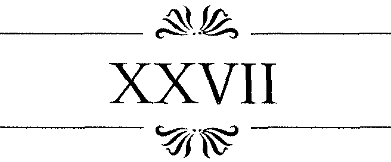

ORTASINDA BÜYÜK BİR havuz olan bu bölümün tavanını, başlık süslemelerinden yine Bizans'a ait olduğu belli olan dört sütun taşıyordu. Diğer mimari detayları boğazımı yakan sıcak buhar yüzünden izleyemiyordum.
140 A N N CHAMBERLIN
Aşçıbaşının önünde fıkırdayan bir makarna tencere-sine benzeyen havuzun yüzeyinden sıcak buharlar yükse- s liyordu. Mermer zemin ateş gibiydi. Bir kenarda her zamanki kaba tembellikleri içinde, sıcaktan neredeyse morarmış iki Türk oturuyordu. Yoğun buharın içinde titre
şen şekiller, yavaş yavaş hayaletler gibi kımıldanıp kayboluyordu. Sıcaktan gözlerim netliğini kaybetmişti.
Yeryüzünde, Dante'nin Cehennemi'ndeki kaynar kazanlara en yakın yer Türk hamamlarıydı herhalde.
Sybaris'in zevk düşkünü insanları gibi, mistik bir tembellik içindeki bu insanlar da günahlarının fantastik cezasını çeker gibiydiler. Keseler, lifler birer işkence aleti gibiydi, masörlerse sanki cehennem zebanileri... Bunların yanında Foscari tiyatrosu bir hiç sayılırdı.
Yoğun buharın içinde nefes almaya çalışarak Hüseyin'e yalvardım. "Beni buradan çıkar."
Hüseyin'in kafasındaki Venedikçe de buharlaşıp uçmuştu galiba. Sözlerim mırıltılı konuşmalar ve bastırıl-mış kahkahalar arasında, herkesin kendini sonsuz bir lanetin nesneleri gibi hissettiği bu korkutucu havanın içinde kaybolup gitti.
Hiç şansım yoktu, evsahibimi izleyerek, boğazıma kadar yükselen buğulu havuza girdim.Kırmızı beyaz peş-
temallarımız, suya girince belimize kadar yükselip bir süre suyun üstünde yüzdü, sonra iyice ıslanıp tekrar aşağı indi.
Bu kaynar suda yumurta bile pişerdi ama dişimi sıkıp ses çıkarmadım. Zaten ses tellerim titreşemiyordu.
Sıcaklık tüm eklemlerimi hissizleştirmişti, mermer zeminin üzerinde adeta fokurdayan suyun içinde yayılıp kalmıştım.
Birden, bu sonsuz işkencehanede, hayatımdaki ilk Türk kadınını görerek şok geçirdim. İki oda arasındaki Safiye Hatun 141
en kestirme yoldan havuzun kenarına gelmişti, iki eliyle yüzünü kapatmış, parmaklarının daracık aralığından etrafa bakıyordu. H e r h a l d e bizim yanımızda havuza girmeyecekti. Eğer vücudumdaki kanın tümü çekilmiş olmasa utançtan kıpkırmızı olabilirdim.
Birkaç adam kadının hareketlerini ilgiyle izliyordu.
Hüseyin bana bir şeyler açıklamak zorunda hissetmişti kendini, demek ki Venedikçesini t ü m d e n unutmamıştı.
"Zinayla suçlanıyor," dedi. "Bunu suçsuzluğunu kanıtlayabilmek için yapıyor. O adamlar kocası ve erkek kardeşleri. Ayağında şalvarı yok ve eğer masum değilse etekleri başına doğru havalanır."
"O zaman?" diye mırıltıyla sordum. Sıcaktan bayılacak gibiydim, değil kadın için kendim için bile ses çıkaramayacak haldeydim. "Eğer öyle olursa, kocası onu öldürebilir, tıpkı Venedikli aldatılmış bir koca gibi. Bu eski bir âdettir, şu gördüğün mermer sütunların sahibi Romalılar kadar."
"O masum," dedim. Koca ve kardeşler de b u n a ikna olmuşlardı zaten.
"Tabii ki," dedi Hüseyin, başını ilgisizce başka bir yöne çevirmişti.
"Neden tabii ki diyorsun?"
" Ç ü n k ü eğer b u n u yapabilecek cesareti varsa, bu, onun kafasındaki tek bir saç telinin bile kirli olmadığının kanıtıdır. Yalnızca kocasına b u n d a n böyle farklı bir açıdan bakacaktır. O n u n Allah'ın yarattığı tek varlık olmadığını anlayacak ve hatta daha mükemmellerinin olduğunu düşünecektir. Karısını böyle bir şey yapmaya zorlayan bu adamın bir ahmak olduğundan eminim."
Bu sözlerden sonra Hüseyin yeniden kendini suya bıraktı. Ben de itiraf etmeliyim ki, kendi rahatsızlığım bir başkasınınkiyle ilgilenmeme izin veremeyecek Ölçüdeydi.
142 A N N C H A M B E R L I N
Yanı basımdaki çıplak, haşlanmış erkek vücutlarının farkındaydım ama bunu düşünecek halde değildim. Birden Hüseyin sudan çıktı, sanki derisi tütüyordu ve yüksek sesle konuşmaya başladı. Türkçemin her söyleneni anlayacak düzeye henüz gelmediğini unutarak bana bir şeyler söylediğini sandım önce.
"Dininden başlarım senin!" diye bağırıyordu. "Kıçını şeytan parmaklaya," "Seni pezevengin evladı, seni orospu çocuğu," diye sürdürdü naralarını.
Doğrusu bu dili iyi konuşuyordu. Bir gezginin ilk öğrenmesi gerekenin küfürler olduğunu bir kez daha anlamıştım. N e d e n Öfkelendiğini b i l m i y o r d u m ama en azından kelimeleri bir parça anlayabiliyordum.
Sonra sıcaktan karışan kafam toparlandı. O b a n a .
bagırmıyordu. Bunların muhatabı beni yandan sıkıştıran yaratıktı.
H ü s e y i n o n u n üzerine a t l a m a d a n Önce, b u h a r ı n içinde sivışmıştı çoktan. Adımları demin zinayla suçlanan kadınınkinden bile daha dişiydi. Ne Hüseyin ne de ben birbirimizin dilinde duygularımızı anlatacak haldeydik. Omuzlarıma inen saçlarım, sakalsız sayılabilecek yüzüm ve buraya ait olmadığımı belli eden havamla bir sapığın isteklerini kamçılamıştım.
T e ş e k k ü r e t m e k için H ü s e y i n ' i n g ö z l e r i n e bile bakamayacak kadar utanmıştım. Saldırgana gününü gösterecek gücüm yoktu. Masumiyetimi nasıl ispatlayabilirdim ?
Hüseyin'in bir bakışıyla havuzdan çıktım ve girişe döndük. Kıyafetlerimiz odacıklarda bizi bekliyordu, temiz ve serin havayla ciğerlerim bayram etmişti.
Ama henüz elbiselerimin bana sağladığı güvenliğe kavuşamamıştım. Uzun Afrikalı ıslak peştemalımın yerine kurusunu verdi. Bir ikincisini omuzlarıma, üçüncüsü-
Safiye Sultan 143
nü de başıma koydu. O n a teşekkürle gülmeye çalışırken ağzının kenarındaki alaycı sırıtışı yine gördüm.
O sırada Hüseyin b e n i m l e tanıştırmak üzere bir başka Türk'ü almış geliyordu. O da herkes gibi peştemalına sarınmıştı. Bu adamı niye benim yanıma getirdiği hakkında hiçbir fikrim yoktu. Hakkında tek bildiğim elli yaşlarında bir adam gibi göründüğüydü.
Ö n c e Hüseyin'in beni doğru dürüst bir adamla tanıştırarak utancımı unutturmaya çalıştığını sandım. Tanışma gayet kısa sürdü. Adam hiç Venedikçe bilmiyordu ve midemdeki ağrı bana muhabbet için Afrikalının bile daha iyi olduğunu düşündürüyordu.
Hüseyin ise ısrarla tanıştırma işini uzatmaya çalışıyordu. Şu anda hatırlayamadığım bir isim söyledi. Adamın iznik'te atölyesi varmış, çinileri çok ünlüymüş, onun kobalt mavisi sırının sırrını kimseler bilmiyormuş falan filan..
"Sana aradığımız adamı bulup getirdim," diye sözlerini bağladı Hüseyin.
Hiçbir hareket yapmadığımı gören adam, daha çok gençlerin yaşlıca birine tanıştırıldıklarında yapması gerekeni kendi yaptı, Önümde saygıyla eğildi. O n u taklit etmeye çalıştım ama pek başarılı olduğum söylenemezdi.
Aptalca, hiçbir şey söylemeden bir süre karşılıklı bakıştık, sonra odacıklarımıza doğru yürüdük. Ben kendimin-kine girdim, Hüseyin de adamla beraber yandakine.
Afrikalı, gizli ritminin bir kısmını benimle paylaşır gibi dolaşıyordu etrafımda. Benim odada kilim ve yastıkların üzerinde oturduğumu görmüştü. Yukardan aşa
ğı, aşağıdan yukarı bir küçük çocuğa yapıldığı gibi, getirdiği ılık havlulara beni sarıp, ince, p e m b e uçlu siyah parmaklarıyla ovalaya ovalaya v ü c u d u m u kurulamaya başladı.
144 A N N C H A M B E R L I N
Doğrusu hoş bir d u r u m d u , ama hiçbir erkeğin, kim olursa olsun, bana bu kadar yakın temasta olmasını ka-b u l ' e d e m e z d i m . O n a b u n u istemediğimi ifade ettim, nargile ve masaj tekliflerini de reddettim, ama kahveye hayır demedim.
İçleri koyu ve sert kahveyle dolu iki fincan da yan odaya götürüldü. Sonra ağır bir garip duman odayı sarı-
verdi. Amerika'da b u l u n u p sonradan Karadeniz kıyılarında da yetiştirilmeye başlanan bu garip şeyi galiba çinici adam tüttürüyordu. Bu, tütün dumanını içime ilk çektiğim andı. Konstantinopolis'te son moda bir alışkanlıktı tütün içmek. Aynı odada bulunanların bile bu dumandan etkilendiklerini biliyordum.
Sıcak hava ve su, kahvenin hoş tadıyla birleşince, gün boyu yaşadığım duygusal fırtınaların yorgunluğuna daha fazla katlanamaz bir hale gelmiştim.
Tuhaf bir uyuşukluk tüm bedenimi, beynimi kaplamıştı. Yan odadaki konuşmalar giderek uzaklaşır gibiydi, oracıkta içim geçiverdi, uyuyakalmışım...
Beni uyandıran ses yeniden tekrarlanıyordu yanda.
Saman dolu kutu açılmaya çalışılıyordu. Aslında beni tam ayıltan bazı kelimeler olmuştu, insan kendi dilinin dışında konuşmaya başlayınca sanki kelimeler akıcılığını yitirip sertleşiyorlardı. Hüseyin'in böyle bir tonla Filippo ve Bernardo Serena dediğini duydum.
iki Venedikli... Tabii ki sıradan Venedikliler değildi bu iki kardeş, ikisi de ölmüştü ve oğulları onların namını yürütüyordu. Bu adamlar, opak camdan kristal berraklığında, genellikle beyaz ama arada sırada da harikulade bir beceriyle mavi işler çıkarmayı başarmışlardı. Se-renalar tüm dünyaya şaşırtıcı mükemmellikte kadehler, vazolar, tabaklar sunmuşlardı ve bu devam ediyordu. Kısa bir zaman sonra Murano camcıları da aynı yöntemle Safiye Sultan 145
bu sihirli formülü kullanmaya başlamışlardı. Venedik'in sayılı atölyesine karşılık kente refah getiren bir çalışmaydı bu.
Hüseyin'in elindeki malların bir kısmı bu çalışmalardan olabilirdi. Türkler'in inanılmaz lüks talebi düşünüldüğünde bu normaldi. Bu düşüncelerimi kanıtlayan, samanların arasından çıkan parçayı anlatırken H ü s e yin'in söylediği sözler oldu, "vetro a filigrana."
Demek ki Hüseyin bir müşteri bulmuştu. Bu iyiydi, yeniden arkama yaslanıp, kayıtsızlığın kollarına kendimi bırakmak üzereydim. Tam bu sırada, bu sınırda, birden gerçeği algıladım.
Bu herhangi bir zengin müşteri değildi. Belli bir ustalığı, belli bir mesleği olan biriydi bu adam. Ufacık bir bilgiyi hayata geçirip geliştirebilecek biriydi o. O n u n derdi bir vazo almak değildi, bir vazo için çok daha fazlasını Ödemeye hazır biriydi o. Bir büyük gizemli üretimi satın almak üzere biriydi o.
H e r nasılsa ve her neredeyse Hüseyin, Venedikli bir tacir olarak "vetro a filigrana'nın sırrını Öğrenmiş olmalıydı ve bunu satmak üzereydi. Venedik mahvolacaktı.
Beni salaklaştıran minderin üzerinde zıplayarak aya
ğa kalktım, tabanlarımın altındaki mermer zeminin so
ğukluğunu kemiklerimin dibine kadar hissediyordum.
Gömleğimi giymeye çalışırken beni saran havlular yerlere savruldu. Cildim ketenden daha güzeldi ve elbiseme sinmiş kokum bana daha Önce asla bu kadar iğrenç gelmemişti. Gömlek, ter ve tuzdan taşlaşmıştı. Dişlerimi sıkarak bu kokuyu duymazdan gelmeye çalıştım. Aslında bu gömlekle birlikte benden alman yaşama hakkını yeniden geri ister gibiydim.
Pantolonumu toparlamaya çalışırken yan odacığa daldım.
146 A N N C H A M B E R L I N
Hüseyin'in bana şaşkınlıkla bakışından, öngörülerimde yanılmadığımı anlamıştım. Cam üfleyicilerin hareketini tarif ederken donup kalmıştı, opaklığın nasıl şeffaflığa dönüştüğünü anlatmak üzereydi. Bunu anlayabilmek için Türkçe'ye ihtiyacım yoktu. Çinici de farklı bir d u r u m d a değildi, o da donup kalmıştı.
A d a m öğrendiklerinin heyecanıyla havlularından sıyrılmıştı. Ellerinde gelecek servetinin bir ön modelini tutuyordu, inanılmaz bir kâseydi bu. Bir parmak inceli
ğinde bir ayak üzerinde şekerimsi, incecik yapraklarla bezenmiş bir kâse.
Bir şeyler söyledim. Sanırım aklıma gelebilecek en kötü küfürdü bu. Ama öfkem kelimelerin bir dile ait olmasına bile izin vermiyordu, belki de kükredim. Bir saniye içinde sırtımdaki yeleği çiniciye doğru savurtmuş-
tum bile. Cam, milyonlarca parçaya bölünerek mermer zemine saçılmıştı.
Ve bu camla birlikte sanki b ü t ü n dünya da paralanmıştı.
T ü r k l e r ' i bir kenara iterek, Beyazıd M e y d a n ı n ı n karmaşık dünyasından ve tatminsiz kumrularından hızla uzaklaşıp gittim.
MM, .
ĞLEDEN SONRAKİ yoğun insan kalabalığının beni içine saklamasını umarak, Hüseyin'le tırmandığım yoku
şa tekrar vurmuştum kendimi.
Arkamdan geleceğinden emindim. Ayasofya'yı altın rengine boyayan ışığın altında, bir saat sonra da b u n d a n emindim, korkak bir tavşan gibi arkama baka baka kaçı-
(Safiye Sultan 147
yordum. Kentin bu en kutsal meydanında bir ara onun sarığını görür gibi oldum. Hüseyin herhalde bir başka Tanrısal yakarışın içindeydi.
Gerçek ya da hayal, bu kuşku beni caminin ters tarafına yöneltti. Orada, karanlık bir aralık buldum, bana yeteri kadar güvenli görünüyordu. Yürüdüm...
Çalışan işçiler tarafından bırakılmış, sönmek üzere olan bir meşale aşağıya doğru giden otuz kadar aşınmış
taş basamağı aydınlatıyordu. Onları izledim. Dünya üstüme kapanmıştı. H i ç tanımadığım, tehdit edici bir kentin yalnızlığı içindeydim, ben bir yabancıydım.
Aşağı indikçe suyu duyuyordum, bir yığın su... Aşa
ğılarda bir yerde ağır ağır damlıyordu. Acıklı bir sazın nağmeleri gibiydi bu ses. Zengin bahçelerini, mayıstan ekime kadar yeşil tutacak bollukta bir suydu bu. Sönmekte olan meşalelerin titrek ışıklarıyla yıldızlanan bu suyla, bu kent kıtlıkları aşabilirdi. Ne suyun, ne de bu sarnıcı ayakta tutan sütunların sonunu görebiliyordum, îçim acıyarak bu devasa sütunların da Bizans'tan kalma olduğunu gördüm.
Eğilip bir avuç suyla bu buluşumu taçlandırdım. İnsana kasvet veren su kesinlikle lezzetliydi. Çabuk çabuk hamamın benden çaldığını geri aldım.
Yenilenmiştim. Bu yeraltı sarnıcındaki suyla hayat bulmuştum ve güvenlikteydim.
Güneş batmış olmalıydı, meşaleler de son ışıklarını veriyorlardı artık. Yaşam bir alacakaranlıktaydı, kafamda yeni bir plan oluştu.
Yapılacak iş köle pazarını bulmaktı. Köle pazarını ve Sofia Baffo'yu...
148 A N N CHAMBERLIN
Güneş batmıştı, Konstantinopolis'in sokakları sessiz bir mezar soğukluğundaydı. G ö r d ü ğ ü m erkekler gündüz dünyasının kötü bir kopyasiydı. Gerçek olan haremlerdi ve bu geceye yol gösteriyordu.
Çiçekler gibi tüm dükkânlar kepenklerini indirmişlerdi. Ama her yerde taçyaprakları dökülmüş bitkinin ortasındaki taze filizleri görebiliyordum. Başlangıçta sokaklardaki yalnız adımlarımın dikkati çekebileceğini dü
şündüm. Ama artık peçelerin ya da kapalı tahtırevanların gölgesindeki gizli gidip gelmeler yalnızca kadınlara aitti. Göze görünmeseler bile bu dedikodu, yemek ve rahatlık tarifiyle yapışmış ilişki yumağının gizemli varlığını hissedebiliyordunuz.
Kendimi böyle bir taze filize yapışmış hissediyordum. Bu duygu beni köle pazarının tahta kapısına kadar götürdü, ama tabii ki kapı kilitliydi. Öğle saatlerinde kapatılmış olmalıydı. Ortalığı ısıtan mart güneşi de olsa, değerli bir müşteri için bu kadar sıcaklık bile caydırıcıydı herhalde.
Binanın arka tarafını b u l m a k çok kolay değildi.
Adımlarımı bir çeşit karışık geometrik hesapla ayarlamam gerekti. En sonunda bir asmayla çarpışınca doğru yolda olduğumu anladım. Bir duvara tırmandım, eski bir çatıyı aştım ve bir avluya düştüm. Burası sabah Sofia'nın pencerelerinden duyulan seslerin geldiği yerdi.
P e n c e r e l e r yukardaydı ama b u n l a r d a n s ü r ü n e r e k girmek zor görünmüyordu. Tek sorun kepenklerdi. Yaz akşamlarında serin havanın içeri girebilmesi için bunlara ince teller geriliyordu. Ama şimdi kışa göre ayarlıydılar ve bu bir hırsızın içeri girmesini zorlaştıriyordu. Tabii benim d e . . . Deneyimsizlik söz konusu olunca kararlılık önem kazanıyordu.
Safiye Sultan 149
Başlangıçta güvenli bir biçimde planlanan köle dükkânı ve avlusunun sahipleri, belli ki olaysız geçen uzun yıllar sonucunda bu konuyu ihmal etmişlerdi. Vaktiyle dikilmiş olan asma, ağaçlaşıp duvar boyunca yükselmişti.
Elimde bir duvar dibinde bulduğum keserle, hızla tırmanıverdim üstüne. Pencereye uzanan dal ben üzerinde ilerledikçe aşağıya doğru eğiliyordu. Bütün aceleciliğime karşın sessiz ve çok dikkatli davranmalıydım, bu da çok zordu. Yine de ani ataklar, duraksamalarla işime devam ettim.
Menteşeler yerinden kurtulmaya başlamıştı.
Bir din uzmanı değilim ama, Tanrı'nın gençleri özellikle koruduğuna inanırım. Daha yaşlı birinin, yapmaya kalkışsa, kesinlikle cezalandırılacağı bazı işleri gençlik söz konusu olunca görmezden geliyor olmalıydı. Şu ana kadar, hayali gelebilir ama, onun onayını almış olduğumu düşünüyordum, ya da en azından yaptıklarıma şiddetle karşı çıkmıyor gibi geliyordu bana.
Belki de bu Tanrı'nm işi değil de bir sihirdi. Beni koruyan belki de, çok kısa zamanda ölüp beni koruyuculuğundan yoksun bırakacağını bilen annemin çocuk alnıma kondurduğu tılsımlı bir öpücüktü. Böyle bir öpücü
ğü anımsamıyordum, ama beni gözeten gizli bir gücü hissediyordum. H e m e n caysam güven içinde Hüseyin'in konuk odasına dönebileceğimden emindim.
Aslında dokunulmazlığımın sınırları b u n d a n daha ileri noktalara kadar uzanabilirdi. O malum geceden beri en kusursuz ve en uzaklara ulaşabilecek kadar "büyük" adımı atabilmek için olayları kafamın içinde binlerce kez prova etmiştim. Çok "kesin" bir anda, inanıyorum ki, büyük arzumun peşinde kendi özgürlüğümden vazgeçmiştim. Belki de daha farklı ve daha mutlu bir ya-150 A N N CHAMBERLIN
şamdan da... Büyük arzumun beni alaşağı ettiği, kaderimin d u r d u r u l a m a y a n bir heyelan altında kalmışçasına savrulup gittiği o "kesin" an ne zamandı? Bu soruyu tatminkâr bir biçimde cevaplandıramıyordum. Hüseyin bunun, onun korumasından kendimi yoksun bıraktığım an olduğunu düşünüyor olmalıydı. Ama ben hiçbir kalıcı zarara uğramadan kepengi yerinden sökmekten de daha ilerilere gidebileceğimi biliyordum.
M a d o n n a Baffo, o gece tabii ki, büyük odada tek başına yatıyordu. Benim kuru asma dallarına tırmandığımı duymuştu ve uyanıktı. Ayışığı odaya açık pencerelerden dökülmeden önce bile bu seslerin sahibinin ben olduğumu biliyordu. Beni ele verebilecek bir çığlık atmadı. Ayakta bekliyordu. Dumanımsı ışığın içinde, tütsüler arasın'da değerli bir ikona gibiydi. Pencereden aşağı doğru kendimi sarkıttığımda bana elini uzattı, mutlu bir şekilde gülümsedi ve fısıltıyla konuştu.
"Sinyor Veniero, sizi görmek ne kadar güzel."
Bana G i o r g i o dememesinin ü z e r i n d e d u r m a d ı m .
O n d a n daha büyük şeyler bekliyordum, "Seni kurtarmaya geldim," dedim.
Arkasını döndü, birkaç adım attı, benimle oyun oynuyor gibiydi, şaşırmıştım.
"Ama... bu olanaksız," dedi.
"Değil. Saklanabileceğimiz mükemmel bir yer buldum. Buraya çok yakın, bir süre için sığınabileceğimiz bir sarnıç..."
"Bir sarnıçta nem ve soğuk içinde beklemek için hiçbir arzum yok."
"Sadece kısa bir süre için, ben Pera'ya gidip, kendi vatandaşlarımızdan bir tekne sağlayana kadar."
"Ama Sinyor Veniero, yapamam. Sizin gibi, bir sinek gibi duvarlara t ı r m a n a m a m . Sizinle tanıştığım ilk günden bu yana yaptığınız gibi yani..."
Safiye Sultan 151
Yaptığım fedakârlıklar karşılığında bir sineğe benzetilmekten hoşlanmamıştım ama yine de aldırmadım.
"Yapabilirsin," diye ısrar ettim, ilk karşılaşmamızda, her şeye karşın bende en gıpta ettiği şeyi ona sunuyordum. "Yardım edeceğim. Yapabilirsin. Yapmalısın."
"Bilmiyorum," dedi. Korktuğundan ya da bana gü-
yenmediğinden değildi bu, gerçekten de sadece bilmiyordu.
Ben biliyordum. O n u yakaladım ve kuvvetlice belini kavradım. Ah o bel, Tanrım bu dokunuş kollarımda küçük kasılmalar yaratmıştı. O n u pencereye doğru taşıdım.
Sofia minicik bir çığlık attı. Bu zevkten miydi, korkudan mıydı, yoksa itirazdan mıydı? Benimle itişmeye başlamıştı, birilerinin bizi duyabileceğini düşünerek onu yere bıraktım.
"Sinyor Veniero," dedi. Aniden karar vermiş gibiydi. " Ö n c e şuraya o t u r u n , bir şey söylemek istiyorum.
Bugün başıma gelenleri anlatmak istiyorum."
" D a h a sonra," dedim. O n a emretmiyor, yalvarıyordum. " G ü v e n d e olduğunda anlatırsın, bol bol vaktimiz olacak."
" O h , hayır, lütfen." Kararlılığı artmıştı, bense giderek daha zayıflaşıyordum. "Anlatmalıyım. Bütün gün b u n u anlatacak kimsem olmadığı için sıkıntıdan patladım. Maria'ya anlatmak istedim, ama sanıyorum onu sattılar."
"Maria satıldı m ı ? " diye sordum. Kuşkulu ve pişmanlık dolu düşünceler geçiverdi birden aklımdan. O
kadını, Maria'yı şansın varken satın almalıydın. Böyle bir şans bir daha asla olmayacaktır. Belki de bu yaklaşan bir sonun son uyarışıydı, ama b u n u anlamayı reddediyordum. " O n u nereye sattılar?"
152 A N N CHAMBERLIN
" O h , bilmiyorum," dedi Sofia. "Mutfak işi için yaşlı bir adam aldı galiba. Bilmiyorum. Söylediklerinin tek kelimesini anlamıyorum bu insanların. Beni bugünlerde bir y a r d ı m c ı d a n yoksun bırakmalarını çok düşüncesizce b u l d u ğ u m u söylemek isterim. Ah neler neler g ö r d ü m bugün. Lütfen otur da dinle, yoksa çatlayacağım."
îşte kaderimin çizildiği an b u y d u ve galiba b u n u hissetmiştim bile. Baffo'nun kızı bu son isteğini söyledi
ğinde, onun güzelliği ve varlığı bende ne var ne yoksa silip götürmüştü. Bütün gecedir beni sarmış olan enerjinin de gittiğini biliyordum, kuvvetimi yitirmiş, aptallaşıp beceriksizleşmiştim. Tanrı'nın koruyuculuğu da, bir annenin tılsımlı öpücüğü de yoktu artık. Dizlerimin bağı çözülür gibi oldu ve oturdum. O n u n sesi ve bu sesle anlattığı harikalar beni iyiden iyiye şapşallaştirmıştı.
"Bu sabah, sizin hemen arkanızdan, beni kapalı bir arabaya koydular ve bilmediğim bir yere taşıdılar. Tek söyleyebileceğim yeryüzünde böyle bir yer daha olmadı
ğıdır. Sanki dünyada değildim ve beni taşıyan köleler de meleklerdi ve birkaç saatliğine cennete götürülmüştüm.
Ö n c e dışardaki kalabalığı hissettim, seslerini duydum, ama satıcının hoşuna gitmeyeceğini düşünerek kafamı çıkarıp bakmadım. Biraz da korkmuştum, kalabalık kaba saba ve çok gürültücüydü. Giderek azaldılar ve duyduğum sesler daha saygılı, kibar bir hal aldı. Sanki büyük bir tapınağa yaklaşıyor gibiydik. îşte o zaman örtüyü biraz aralayıp dışarıya bakma cesaretini bulabildim.
Kocaman ve harika bir bahçeden geçiyorduk. Sayısız nefis patikanın kenarında düzgün sıralar halinde yüksek serviler uzayıp gidiyordu. Ağaçların diplerindeki çi
çek tarhlarında kendileri de oraya dikilmiş gibi görünen kırmızı başlıklı bahçıvanlar vardı.
Safiye Sultan 153
Ah, Tanrım ne müthiş çiçeklerdi onlar. Tıpkı bir halı gibi... Parlak pembeler, kırmızı ve beyaz tomurcuklar.
Çiçekler Türk ordusunu sembolize ediyordu. Şaşkınlıkla karışık bir hayranlık içindeydim, kafaları sarıklı askerler gibi duruyordu hepsi de. Hayatımda hiç böylesini görmedim inan."
Bu çiçekler " t ü l b e n d " dedikleri çiçekler olmalı, diye d ü ş ü n d ü m . Biz, Avrupalılar bunlara " t u l i p " diyorduk.
Çiçeğin adını yanlış da söyleseler bahçelerini onlarla dold u r m a k t a n geri durmamışlardı. Türkler'in bu çiçeğin nasıl üretilip büyütüldüğünü saklamalarına karşın Hollandalıların bu sırrı çözdüklerini ve kendi ülkelerinde değişik çeşitlerini üretmeye başladıkları duymuştum.
Yine de onları kısa zamanda Venedik'te görmeyi u m u t etmiyordum. Hele de Sofia'nın anlattığı müthiş
dekor içinde... Konstantinopolis'te gezdiğim bahçe ve parkların hiçbirinde bu kadarını ben de görmemiştim.
Herhalde abartıyordu, çünkü yalnızca Sultan bu kadarını yapabilirdi.
Sultan... diye kendi kendime tekrarladım. M a d o n n a Baffo, Büyük Saray'a götürülmüş olabilir miydi? Tanrı korusun... Dinlemeye devam ettim.
" S o n u n d a büyük bir kapıya geldik. O r a d a benim arabayı taşıyanlar durdular, satıcı bile daha öteye gidemiyordu. Beni arabadan indirip çarşaflara sardılar ve dükkândan bu yana bizimle gelen iriyarı, beyaz adama verdiler. Adamın, k e n a r ı tavşan kürküyle süslü koyu yeşil uzun bir elbisesi vardı ve şeker külahına benzeyen upuzun sivri bir şapka takmıştı başına."
Önceki gün Hüseyin'in bana gösterdiği adamı hatırlayıverdim. "Saraydan..." demişti arkadaşım. Demek ki doğruydu bu. Ve bu saray, önünde adalet arayan dilencilerin dolaştığı Babıâli'den farklı bir saray olmalıydı. Git-154 A N N CHAMBERLIN
tiği yer haremdi, yüreğin de yüreği olan harem. Sultan'
dan başka hiçbir erkeğin ayağının içeri adım atamadığı harem. Dinlemeyi s ü r d ü r d ü m .
" A d a m , b e n i kapıdan geçirdi. Ve sonra... Sana nasıl anlatabilirim? Sanki b ü y ü k bir canavar tarafından yutulmuş gibi hissettim kendimi, içi gri soğuk m e r m e r l e r l e kaplı bir canavar. Evet, bana öyle b a k m a Veniero. Öyle bir korkuydu ki bu, taa belkemiğimin dibine kadar titr e d i m . N e m ü t h i ş bir canavar... diye d ü ş ü n d ü m . N e büyük, ne güçlü, ne harikulade bir canavar... O d ö n d ü
ğ ü n d e dünya sarsılıyor, gözlerini açıp kapadığında dünya ya ışığa boğuluyor, ya karanlığa gömülüyor. O h , b e n bu canavarın parçası olabilirim, diye d ü ş ü n d ü m , bir daha gün ışığını göremesem bile b u n a razı olacağımı biliy o r d u m .
Canavarın içindeki uzun mermer koridorlar boyunca yürüdük. Benim rehberiminkine benzeyen kürklü elbiseler giymiş sarıklı bazı zenci erkekler dolaşıyordu ortalarda. Kapılarda n ö b e t tutanlar vardı. D a h a içerilere, içerilere doğru ilerledik. Sonra, bir kapı açıldı ve kendimi müthiş bir ışık ve ses c ü m b ü ş ü n ü n içinde buluverdim.
Sayısız ayna, yaldız, mücevher, saten ve cilalı fayanstan yansıyan bir ışık seliydi bu. Fayanslara işlenmiş rengârenk şekiller burayı bir bahçeye d ö n d ü r m ü ş t ü . Bu yüzeylerde ses de daha farklı yankılanıyordu. O d a d a k i kafeslerde bin bir çeşit kuş şakiyordu ve k a d m müzisyenler ellerinde sazlar oynak şarkılar çalıyordu. Ama sesin asıl kaynağı, k a d ı n kahkahaları ve konuşmalarıydı. En azından yirmi k a d ı n vardı odada, hayatımda g ö r d ü ğ ü m en güzel yirmi kadın.
H e p s i de birbirinden farklıydı; siyah, beyaz, kumral, sarışın... Mavi gözlüler de vardı, zifir gibi kara gözlüler de. Kızıl saçlılar, kahverengi saçlılar, kuzgun gibi kara Safiye Sultan 155
saçlılar... Anlatılamaz bir zerafet içinde giyinmişlerdi, üzerleri mücevherlerle donatılmıştı, kumaşlar altın işli ve kadifeydi. Onlarla nasıl yürüyebildiklerine şaştım. Konuşma biçimleri hareketliydi ve yastıkların halıların arasında gülsuyu içip, çeşit çeşit tatlı yerken çok mutlu görünüyorlardı.
Yanımdaki adam bana eğilmemi söyledi ve buna uydum. Bir tırtıl gibi yere doğru kapaklandım. O çarşaflara sarınmışken b u n u yapabilmek inan az buz iş değildi, işin aslı, bana söylenmese bile eğilebilirdim. Canavarın nabzının attığı yerde gördüklerimden öylesine etkilenmiştim ki, buna karşı koyamazdım.
Bir de baktım, b u r n u m u n ucunda dana derisinden küçük sarı bir terlik. Bir kadın beni yerden kaldırmaya çalışıyordu. Sonra beni çarşaflarımdan kurtardılar. îçeri girişimle birlikte hepsi susmuş olan bir oda dolusu kadın yutkundu ve birden yine gürültüyle konuşmaya başladılar. Yüzlerine vuran kırmızılıktan anlamıştım, bazıları beni kıskanmışti. Şunu söyleyebilirim, bu gerçekten de insana kendini iyi hissettiren bir şey.
Özellikle bir kadın benden hoşlanmış gibi duruyordu. Bende de ondan etkilenmiştim. Diğerlerininkinden çok daha gösterişli olan elbise ve süsleri değildi b u n u n nedeni. Tabii onlar da etkileyiciydi ama, beni etkileyen şeyin yanında bu hiç kalır. Oradaki kadınların en güzeli değildi, biraz yaşı geçmişti. Bir zamanlar harikulade olduğu belliydi, ama şimdi kırkında vardı ve rahatlıkla benim annem olabilecek bir yaştaydı. Cildi hâlâ mükemmeldi, fildişi gibi pürüzsüz, beyaz ve soğuk. Beyazlarını kapamak için saçlarına sihirli bir karışım sürüyordu sanırım, bu yüzden doğal bir pırıltı dolaşıyordu başında. Geniş alnını, nefis elmacık kemiklerini belirginleştirecek bir şekilde onları arkaya doğru taramıştı.
156 A N N CHAMBERLIN
Ama en çarpıcı yanı gözleriydi. Kaşları incecik yay biçimindeydi ve onların altında, kirpiklerine Türkler7de moda olduğu gibi bol bol rastık sürmüştü. Benim satıcı da çıkmadan önce bana sürmüştü zaten. O siyah gözler kömürden daha karanlıktı ve insanın yüreğine işliyordu.
• Rastık belki de onları bir parça örtüyordu, aksi halde o gözler insanın ciğerine sokulmuş bir kamaya benzerdi, insana itaati ve uğruna ölümü emreden o bakışlar...
Ve hemen ona itaat ettiler. Hepsi birden... Beni soyan kız şimdi beni döndürüyor, yürütüyordu, bu emredici kadına doğru ilerletti beni. Kız, sahibesine karşı, Maria'nın bana yaptığı gibi bir naz ya da bıkkınlık içinde değildi. Benim Venedikli hizmetçilere istediklerimi yaptırabilmek için ya isteğimi tekrarlamam, ya sesimi yükseltmem, ya da hatta ayağımın ucuyla dürtüklemem gerektiği çok olurdu. Ama bu kadın bütün emirleri bakışlar ya da ufacık fısıltılarla veriyordu.
H a t t a o beyaz şapkalı koca adama bile... Adam kadının boynunu iki eliyle koparabilirdi ama, onun ö n ü n d e eli yerlere değecek kadar eğiliyordu ve eğer bir kuyruğu olsa kadın ona iltifat ettiğinde mutlaka zevkle sallayacaktı. Eğer böyle dağ gibi bir adamı yönetebiliyorsa, onun dünyanın sahibesi olduğunu öğrenmek benim için hiç de şaşırtıcı olmazdı."
Baffo'nun kızına, hadımların h e m beyaz hem de zenci olabileceklerini ve yine yanlış erkeğe saygı gösterdiğini söylemeyi gözüm almadı. Böyle bir şaşırtmayı hak etmeyecek kadar büyük bir zevkle gösterisini yapıyordu.
" S o n u n d a kadın, kollarındaki bilezikleri sallayarak, beni kendi minderinin yanına çağırdı. Kollarıma bacaklarıma dokundu, dişlerime baktı, kulaklarıma, boynuma.
Ve ceketimle bluzumu çıkartmamı işaret etti, böylelikle Safiye Sultan 157
benimle ilgili tüm öğrenmek istediklerini... Doğrusu Sinyor Veniero onun karşısında hiçbir utanma duymadım, o kocaman adamın varlığına karşın hem de, ama şimdi sizin önünüzde... Daha ileri aşamaları hayal etmelisiniz, anlatamayacağım... Yalnız şundan emin olabilirsiniz ki, hiçbir at satın alınmadan önce b e n i m k a d a r ince bir kontrolden geçmemiştir. Yani insan, kadının beni kendisi için almak istediğini bile rahatlıkla düşünebilir/'
M a d o n n a Baffo'ya, Sultan'ın haremiyle ilgili duyduklarımı anlatmadım, eğer anlatsaydım bunun pek de olasılık dışı olmadığını anlayabilirdi. Suratım asık, sessiz bir biçimde karşısında oturuyordum. Bunu fark etti ve bağırdı.
"Hayır, Sinyor Veniero. Şunu söylemeliyim, şımartıldım. Öyle bir kadın tarafından farkına varılmak... Ne beni hiçe saydı, ne de elinin bir hareketiyle başından def etti..."
Ve sonunda yemin ederken sesi zevkle titriyordu.
"Aziz Marko ve Tanrı adına yemin ederim ki, şu hayatta o kadına ait olmaktan başka hiçbir arzum yok. O ne başkalık... Hiçbir kadında böyle bir güç görmedim. H a t t a bir erkekte de. O n u n elbiselerini tamir edip, çamaşırlarını yıkamaktan mutlu olurum, yeter ki yanı başında olabileyim, belki o güçten bir parça bana da geçebilir...
Bundan söz ederek şansımın kaybolacağına inanmıyorum, o kadının beni satın alabileceğini düşünüyorum.
Ben ayrılmadan önce ellerimi avuçlarına aldı, okşadı, gülümsedi ve bir şeyler söyledi. Venedikçe olsaydı herhalde şöyle derdi. 'Biz büyük dostlar, olacağız sevgilim, sen ve ben.'
158 A N N CHAMBERLIN
XXII
MADONNA BAFFO'nun sesinden b a ş k a b i r ses, onun süslü püslü son sözlerinin arasında kulağıma çalınır gibi olmuştu ama ben aldırmamıştım. Şimdi tekrar duymuştum, daha yüksek ve netti ve asla ihmal edilmeyecek bir durumdu bu. O t u r d u ğ u m u z odaya doğru birileri geliyordu ve şimdi tam kapının önündeydiler.
"Tanrım..." diye bağırdı Baffo'nun kızı. "Ya seni burada bulurlarsa..."
Kendi karmaşasında, bir fısıltının bile adamların kuşkularını doğrulayacağını düşünmemişti. Ben de kendi karmaşamda onu korumayı d ü ş ü n m ü y o r d u m , hatta kendimi bile koruyabilecek d u r u m d a değildim artık. Sıçrayıp pencerenin kenarını t u t t u m , ama bacaklarımdan biri hâlâ odada sallanıyordu ve biri bileğime yapışmıştı, yere doğru savruldum. Kısa bir süre hiçbir şey hissetmedim, gözlerimi tekrar açtığımda sırtüstü yatıyordum.
Üstümdeki ağırlığın sahibi genç köle satıcısıydı ve elindeki kocaman, pırıl pırıl bir kamayı kalbime doğru yöneltmişti.
"İsa, Isa, bekle!" ihtiyar olanı bağırıyordu. "Bu, sab a h gelen Hıristiyan genç."
" O n u n önce kalbini çıkaracağım, sonra da sünnet edeceğim." Bir şekilde ne dediklerini anlayabiliyordum.
Daha önce söylediğim gibi küfür ve hakaret daha çabuk öğreniliyordu.
"Ama bekle. Ö n e m l i dostları olabilir. Bilmiyoruz.
Ellerimize onun kanının bulaşması bize zarar verebilir.
Kıza bi
kersek, r şe
ya y olmamı
da
ş
yasay v
a e en
göre önemlis
, öç
i de bu
istersek,
. Eğe
konu r kan dö
Babıâli'y e
Safiye Sultan 159
kadar gidebilir. Ticaretin bozulacağından korkup, satışı iptal edebilirler."
Genç adam, babasına öfkeyle baktı. Elindeki kamayı hırsla duvara doğru fırlattı.
D e r h a l o d a d a n çıkarıldım. Baffo'nun kızıyla ilgili olarak gördüğüm en son şey onun divanda oturup, hiçbir şey olmamış gibi bluzunun yakasını düzeltmesiydi.
Gecenin kalan saatlerini satıcının boş depolarından birine kilitlenmiş olarak, korku içinde geçirdim.
Sabahleyin, beni esir alan adamların şahsi nefretlerinin bir parça azalmış olduğunu hissettim. Çarşıdaki diğer dükkânlardan birinin sahibinin gözetimine bıraktılar beni.
Selahaddin, üzerindeki ağır giysilere karşın gördü
ğüm en zayıf adamlardan biriydi. Aynı zamanda oldukça uzundu da, bu karışım ona çok tuhaf bir hava veriyordu.
Ellerini sürekli olarak önünde tutuyordu, ince uzun kemikli parmaklarıyla narsist bir şekilde oynuyordu ve aynı tavır içinde siyah, gür bıyıklarını okşayip duruyordu. Belli oluyordu ki bu iki hareketi yapmak ona gurur veriyordu. Pintiliğinden ötürü yemeğe harcanan paranın ziyan edilmiş olduğunu düşünüyor olmalıydı, herhalde ona göre bu paranın yeni bir yatırımda değerlendirilmesi çok daha akılcıydı, içimde garip bir his vardı, kendi icadı olan iki durumun - bıyığı ve zayıflığı- nedeni çevresindekilerden farklı olduğunu göstermekti. Ç ü n k ü hiçbir esir tüccarı yoktu ki sakallı ve şişman olmasın.
"Bana Francesko de." Elini uzatan Selahaddin bunları İtalyanca söylemişti.
Şaşkınlıkla öğrendim ki bu adam doğma b ü y ü m e bir Cenovalı'ydı. Hıristiyanlık'tan vazgeçmesi ona burada bir köle tüccarı olarak kârlı bir işin kapılarını açmıştı.
Kendine niçin Hıristiyanları yenen, Haçlı Seferleri'nin kırbacı birinin adım aldığı konusuna şaşmamıştım.
160 A N N C H A M B E R L I N
"Ah, italya'yı hâlâ çok özlüyorum," dedi Selahaddin. "Kendi ülkemden biriyle konuşmaktan daima çok hoşlanmışım dır."
O n u n b u yakınlığına ben d e k e n d i k ö k l e r i m d e n bahsederek karşılık verdim. Öksüzlüğümü ve amcamın
>*
ölümünü anlattım.
"Aziz Lorenzo adına bu büyük bir acı," dedi. Sesindeki acıma bir parça kabaydı ve sanki yürekten değildi.
"Büyük bir acı," diye tekrarladı. "Sana kahvaltı ikram etmeme izin ver."
Sessiz bir köle, Selahaddin'in dükkânının arka odasına kahvaltıyı getirdi. Yoğurt, zeytin, kurutulmuş erik ve pide.
Başımdan gelip geçenlere rağmen ve belki de tam tersine bu yüzden, her şeyi büyük bir iştahla yedim. Selahaddin bana katılmadı ama, bir mücevhercinin çalışmasını izleyen müşterinin hayranlığıyla beni izledi. Bende, k e n d i n i k o n t r o l altında tutmaya çalıştığı izlenimi uyanıyordu. Çünkü kendini, beni köle olarak gören hayvani duyguların üzerinde hissediyordu.
Yemeğin ortalarında Selahaddin'in bir meslektaşı geldi ve onu bir konuda danışmak üzere kapıya çağırdı.
T ü r k ç e konuşuyorlardı, pek çok şeyi anlayamıyordum ama tartıştıklarının bir kölenin bedeniyle ilgili olduğunu kavramıştım.
"Çok yaşlı," dedi adam.
"Ama sakalı henüz çıkmamış..."
" O n iki on üçten sonra başarı şansı pek yoktur. Ölebilir. "
"Ama böyle bir cilt, böyle bir vücut ve böyle saçlar..." diye karşı çıktı Selahaddin, "bunları nasıl görmezden gelebiliriz?"
Safiye Sultan 161
Kahvaltım bitmişti, ayrılmak üzere ayağa kalktım, italyanca, "Arkadaşım Hüseyin'in evine geri d ö n m e m gerekiyor," dedim. "Bana ve Venedik'e ihanet etti ve ben şikâyet ettikçe bana oh olsun diyebilirsin. Ama bu kentte ondan başka tek bir dostum yok. Ve sanıyorum başıma bir şey geldiğini düşünüp endişeleniyordun"
Engellenmem benim için çok şaşırtıcı olmuştu. Az da olsa Türkçe anlayabildiğimden haberleri yoktu, b u n u bilselerdi zaten konuşmalarını odanın dışında yaparlardı.
Anlamıştım, sözü edilen köle bedeni benimkiydi. İtirazlarım ve mücadelem hiçbir işe yaramadı. Hatta Selahaddin'in bu konudaki kararlılığını daha da hızlandırdı.
Öğle olmadan, tekneyle Halic'in öbür yakasına ta
şınmış ve Pera'nın duvarlarının ötesinde küçük bir kır evine götürülmüştüm. O r a d a yapılanlar gerçekte islam'ın yasalarına aykırıydı. O n u n için de bu işin kent sınırlarının dışında ve Müslümanlıkları göstermelik olanlar tarafından yapılması gerekiyordu.
Benim Pera'nın ötesine gittiğim gün Ebu Isa, korsan gemisinden çıkan sarışın köle kızın karşılığında düşünü bile kuramayacağı dört yüz kuruşunu aldı. Akşama doğru, kapalı tahtırevan dükkândan saraya doğru tekrar yola koyuldu.
Ama bu kez geri döndüğünde içi boştu.
165
OFIA, MERMER CANAVARIN karnına girdiğinde kendini, insanın yüreğine işleyen kopkoyu bakışlı kadının şaşaalı huzurunda bulmadı. Bunun yerine hadım onu iki kat yukarı çıkartıp; karanlık, rutubetli bir koridorun en sonundaki dar bir yatağa götürdü. Yatağın yaylarının üzerine ince bir yatak serilmişti. Defalarca kullanılmaktan eskimiş yatak, üzerine oturduğunda onu zorlukla ta
şıdı.
Umutsuz, zavallı görünüşlü dokuz kız, sert minderlerinden ona doğru baktı ve kırık dökük birkaç karşılama cümlesi, tek kelimesini bile anlayamadığı, cevaplaya-mayacağı değişik dillerden garip bir ses yumağına dönü
şüverdi.
Gerçek anlamda konuşabilen yalnızca hadımdı. Dı
şarı çıkmak üzereyken d u r d u ve nedeni anlaşılmaz bir şekilde kızlardan birini sertçe azarladı. Ufak tefek kız cevap vermedi. Zaten verecek bir cevabı olsa da b u n u yapamazdı. Hadım, onun incecik kolunu koca eliyle sıktı»
Kızın bir an soluğu kesildi ve sonra bir çığlık attı. Adam onu kapıya doğru savurup dışarı çıkarırken, acı ve şiddet birbirine karışmıştı. Sofia, kızın orada duraksayıp, ahşap pervaza alelacele bir şey kazıyıverdiğini gördü.
Daha sonra gecenin karanlığı indi ve kızların iniltileri bu soğuk mermer canavarın içinde tıpkı ülserli bir 166 A N N CHAMBERLIN
m i d e d e eriyiveren bir sap maydonoz gibi eridi gitti. Sofia yerinden kalktı, kapıya doğru ilerledi. Yatağında haşere olup olmadığını k o n t r o l etmek için, odayı cılız ışığıyla aydınlatan yağ kandilini almaya gidiyor gibiydi.
A m a oraya vardığında, pervaza bakmayı ihmal etmedi. Tahtada belli belirsiz de olsa taze bir iz vardı. Kızın bu kadar sert bir ahşaba böyle bir izi elini kanatmadan ya da tırnağını kırmadan bırakabilmesi olanaksızdı.
Sofia'nın tek görebildiği bir h a ç işareti oldu. Sanki bu haç, ümitsiz ve sessiz bir imza gibiydi. "Ben buradaydım.
D ü n y a b e n i m kısa ve zavallı yaşantımdan habersiz, ama Tanrı şahidimdir ki, b e n buradaydım," diyen bir imza...
Sofia odadakilere b u n u söylemek için geri d ö n d ü .
Oysa onlara ne söyleyebilirdi? H e p s i de uyur gibi gözlerini kapatmış yatıyorlardı. Böyle bir u n u t u l u ş u n içinde kelimelere yer yoktu.
Işık sönüp de kızlar gözyaşlarına b o ğ u l d u ğ u n d a , Sofia da onlara birkaç kez katılma arzusu duydu. Gözyaşları, en azından ortak bir iletişim yoluydu. Ama k e n d i n i t o p a r l a d ı ve içinden hep şunları tekrarladı. " G ü ç l ü ol, sabırlı ol. Sabaha her şey daha iyi olacak. O güçlü kadına layık o l d u ğ u n u kanıtla." Bir şekilde, o Tanrısal kadının insanın yüreğine işleyen bakışlarının karanlıkta bile ona ulaşabileceğini d ü ş ü n ü y o r d u . Bu düşüncelerle oyalanıp s o n u n d a uyuyakaldı.
Sabah olup da uyandığında kendini bir kan gölünün içinde buldu.
"Allah k a h r e t s i n ! " dedi yüksek sesle. "Yoksa, yoksa aybaşı m ı ? "
Sesi yeni u y a n m a k t a olan diğerlerinin ilgisini çekmişti, oysa şu anda en istemediği şeydi bu. Sofia kafasını yorganın altına soktu, görünmez olmak istiyordu.
" B u neden b e n i m başıma geldi?" diye mırıldanıyor-Safiye Sultan 167
du. "Güçlü ol. Sabırlı ol." Bu sözler, böylesi bir zavallılık içinde saçma sapan geliyordu ona. Umutları kırılmıştı.
D ü n ona hayran kalan kadın, bugün onu bu pisliğin içinde görse herhalde bir daha suratına bakmazdı. Kesinlikle o kadın kendini böylesi bir güçsüzlüğe teslim etmezdi.
Asla. O çok kontrollüydü, çok güzeldi ve hoştu, çok güçlüydü, bu özellikleriyle "erkek" gibiydi.
i
ikimizin de bildiği benim de salak bir dişi olamadı
ğım, diye düşündü Sofia. Ama bacaklarının arasındaki sıcaklık devam ediyordu ve bu, ona tüm kontrolün elinden çıktığını gösteriyordu.
Sofia, Aziz M a r k o ' n u n , kutsal günlerde halasının onu dua etmeye ve öpmeye götürdüğü altın yaldızlı sandukada, hiç bozulmadan, hâlâ yattığına tam olarak hiçbir zaman inanmamıştı. Tembel ve dinsiz Iskenderiyeli-ler'den tuzlanmış domuz varilinde saklanarak çalınan bir cesedin, şapelin iki yanındaki pırıltılı freskler arasında, kutsanmış bir şekilde saklanmasının ne anlamı olduğunu da bir türlü kavrayamamıştı.
Sofia, Piazza m e y d a n ı n d a dilencilerin sergilediği ölülerin ne kadar çabuk kokuştuğunu gördükçe bu konudaki kuşkuları artmıştı. Eğer altınlarla süslenmiş ah
şap yığın, gerçekten de Havari'nin o kutsal bedenini saklıyorsa, sadece tuzlamanın yeterli olması düşünülemezdi.
Birinin arsenik ve balmumuyla bu kutsal korunma konusunda gökler katına yardımcı olduğu muhakkaktı. Tanrı'
nın burada bir koruma mucizesi yaptığına inanamıyordu. Zaten eğer böyle ulvi bir büyü varsa da, b u n u n başka birine hiç mi hiç yararı dokunmuyordu. Hele de sandukayı dudaklarıyla kirleten körler, topallar ve felçlilerden oluşmuş zavallı kalabalığa... Ve tabii ki Tanrı'nın ona kendisinin yapabileceğinden daha iyi bir şey yapamayacağını düşünen Sofia Baffo'ya da...
168 A N N CHAMBERLIN
Şimdi de t ü m verilere karşın Vali Baffo'nun kızı âdet görmüş olmasını kabullenemiyordu. Eğer yanlışlıkla diğer rahibelerin başına sıklıkla geldiği gibi, fazla sıcak ya da soğuk nedeniyle hastalansa b u n u n tekrarlamaması için elinden geleni yapardı. Bu ikinci bir kez daha olursa üçüncüsüne asla ve asla izin vermezdi. Ama bu farklıydı işte...
İlkinin üzerinden ne kadar zaman geçmişti? Bu, aslında kafasını meşgul etmek istemediği bir konuydu. Bunu yalnızca onu rahatsız eden tekrarlarda düşünürdü. Ve işte yine o çaresiz durumlardan birinin içindeydi. Bir yıl önce miydi? Kabaca tahmin ettiğine göre galiba daha fazla zaman geçmişti aradan. H e r ay, tıpkı dolunay gibi muntazam, düzenli. Nefret ettiği, her C u m a balık yenmesi âdetine benzer bir saçmalık.
Bazen, b u n u n da diğer can sıkıcı saçmalıklar gibi manastıra özgü bir şey olduğunu düşünürdü. Halasının kontrolünden bir kurtulabilseydi... Babasının her yere yetişen katı kurallarından da... Ama şimdi kesin olan, o n u n kendisini Hıristiyan dünyasının dışında bile bulmuş olmasıydı. O, onunla kalacaktı, durum ne kadar de
ğişse de, katlanmak zorunda olduğu aptallar bile kalmasa çevresinde, bu onun varlığının bir parçası olarak kalacaktı. Bu gerçekten de bir belaydı.
H o ş olmayan d u r u m u n u kabullenmekte zorlanmasının bir nedeni de, daha önce kanaması olduğunda halasının onunla ilgilenmesiydi, ilk kez olduğunda bir gece yarısıydı ve k e n d i v ü c u d u n u n ona yapmış olduğu bu korkunç, beklenmedik şey onu iki gün boyunca çılgına çevirmişti. lyileşmemesi üzerine, iki gün sabah ayinini kaçırmayı üçüncü dereceden bir engizisyon için yeterli neden sayan buruşuk suratlı halasına d u r u m u anlatmıştı.
Safiye Sultan 169
Sofia, cennete girmesini engelleyecek duvarları aşabilmek için bu korkunç durumu anlatan kelimeleri söylerken en pişmankâr ses tonunu kullanmıştı.
Ve halası suratının tam ortasına tokadı patlatmıştı.
Çok normaldi bu, " k a n " ve "o malum yer" ile ilgili bir itirafın karşılığında zaten daha başka ne bekleyebilirdi?
O n u şaşırtan ardından gelen vaaz olmuştu.
"Senin aklın nerelerde günahkâr kız, yaradılışı okumadın mı sen? Havva'nın günahkârlığını hiç mi duymadın? Aybaşı kızım... Anamızın günahı yüzünden, Havva'nın tüm kızlarının başına musallat olan bu büyük bela, aybaşı... H e r ay bize bu aşağılık durum hatırlatılır ve bizler de oturup b u n d a n bizi Tanrı'nm bir an önce kurtarması için dua ederiz."
Sofia'nın tek duyduğuysa "acı içinde tahammül edeceksiniz" ve "senin kocana yönelmiş arzun" sözcükleriydi. H e r ikisinden de Havva'nın en azından Tanrı'ya başkaldırdığını anlamıştı. Ama b u n a neden olan "olayı" bilmiyordu. Aslında cennete olan inancı, Aziz Marko'ya olan inancından daha kuvvetli değildi. Bunlar ihtiyacı olanlar içindi, Sofia için değil...
Böylece her ay tokadı yiyip, ardından da vaazı dinler olmuştu. Gerçekte Venedik'le Korfu arasındaki evlenmeyle ilgili yazışmaları başlatan da bu kanamalar olmuştu. Ve Sofia, her ay kendisiyle ilgili bu d u r u m u n tüm sorumluluğunu halasına yüklemişti. Hala, temiz keten bezler hazırlıyor, kirlilerini alıp kaldırıyordu. Böylece Sofia onları g ö r m e k t e n k u r t u l m u ş oluyordu. Galiba rahibe kendini günahkâr hissetmekten zevk alıyordu. Sofia da onun bu duyguyla dolup taşmasına yardımcı oluyordu.
Sofia, uzun inkârının onu halanın yokluğunda tamamen hazırlıksız bıraktığını fark ediyordu. Aybaşınm ona yaptığından çok daha beter bir çaresizlik içindeydi ve bu 170 A N N CHAMBERLIN
garip yatakta yatıp kanamaktan başka bir şey yapamıyordu.
Paslı, bakır bir çaydanlıktan yayılan garip kokulu bir buhar ruhunun her zerresine saldırarak tüm vücudunu rutubetli bir terle genzine kadar sarar gibiydi. Kasıklarında, karnında ağrılar dolaşıyordu. Korsanlarla, Türklerle, kölecilerle ve hadımlarla karşılaşmıştı, ama bundan önce hiçbir şey ona kendisini bir kurban gibi, bu denli kirli, utanç içinde, açığa çıkmış, değersiz, kudretsiz, tecavüze uğramış ve yalnız hissettirmemişti.
Sofia, kendisini içinde çok erkeksi hissettiği için bayıldığı ipek şalvarını mahvederek kontrol dışı bir şekilde akan her damla kanda daha da beter duygulara kapılıy o r d u . Şimdi kadınların n e d e n bacaklarının arasında hiçbir şey olmadan eteklikler giydiğini anlıyordu. Şalvarın kırmızı olması onu bir parça rahatlatsa da bu ona yetmiyordu.
Türk kadınlarının Havva yüzünden Tanrı'mn lanetine uğratılmadıklarına karar verdi. Bu şekilde giyinebili-yorlarsa demek ki, böyle bir sorunları da yoktu. Eğer böyleyse onlara gıpta etmekten başka bir şey yapamazdı ve bu d u r u m d a asla onlar gibi güçlü olamayacaktı.
Ağlamaya başladı. Sofia bu n o k t a d a kendisinden geriye çok çok az bir şey hissedebiliyordu artık. Kişiliği de yavaş yavaş, ama kanayarak akıp gidiyor gibiydi. Bu akışa sıcak, sessiz ama sarsıcı gözyaşları eşlik ediyordu şimdi.
Odadakiler ayağa kalkıp giyindikleri ve namaza durdukları halde Baffo'nun kızı yatmaya devam etti. Saray uyandı, yükseldi, titredi ve dünyaya hükmetmeye devam etti. O ise, yapayalnız, ölmeyi umarak kımıldamadan yatıyordu.
B İRDEN ODAYA BİRİ GİRDİ. Sofia yalnız kalmak istiyordu, bu en azından ölüme daha yakın bir duruştu.
Ama onlara engel olamıyordu. Evet "onlar", en azından iki kişiydiler. Kadınlar... Hızlı hızlı, hep bir ağızdan şakalaşarak konuştuklarını duyuyordu. Ve tek bir kelimeyi bile anlayamıyordu.
Seslerden biri d u r u p seslendi. Sofia bu çağrının kendisine yapıldığını biliyordu ama cevap veremiyordu.
Hıçkırıklarını kontrol altına almaya gayret ederek, bir ölü gibi uzanırsa onu fark etmezler ve ölüm gelip onun utancını yok edene kadar tek başına kalabileceğini umuyordu.
Tahta tabanlı terlikler çıplak ahşap zeminde hızlı tıkırtılar çıkarıyordu. Bir el ona dokundu. Tekrar dokundu ve onu sarstı. Sesler onunla dalga geçen bir tona bürünmüştü. D a h a sıkı bir sarsma. Ve yorgan ellerinden, yüzünden çekildi.
Odayı baştan başa donatan sabah güneşinin altında Sofia, toparlanıp oturdu. O n a doğru eğilmiş iki yüzden biri tanıdık görünüyordu, öndeki. Bu neyse ki, görmeyi umduğu ya da görmekten şiddetle korktuğu, insanın yüreğine işleyen bakışları olan kadın değildi.
Bu kadın, ilk geldiği gün kendisini ayağa kaldırıp yürüten, bir anlamda muayenesine yardımcı olan kadındı. Bir kalfa olmalı, diye düşündü Sofia.
Ayaklarını yataktan aşağı sarkıtınca durumu hemen aklına geldi. Aslında bu unutulacak bir şey değildi. Hareket kanamayı artırmıştı, ıslak bir bezin sıkılışı gibi...
172 ANN CHAMBERLIN
"işte yaptın yapacağını," dedi kendi kendine ve sonra ümitle şöyle düşündü, "Dikkatli ol, kımıldama, asla göremezler. Ayağa kalkma, seni kaldıramazlar, iki orta yaşlı kadın... Böylece anlayamazlar."
Kalfa, ters bir bakış ve ekşi bir gülüşle onu selamladı. Sofia başıyla karşılık verdi ve kadının elini göğsüne vurarak söylediği iki heceyi becerebildiğince tekrarladı. Bu, adı olmalı, diye düşündü Baffo'nun kızı. Ger
çekte lakabıydı. Ayva... Evet kadının lakabı bir meyve adıydı. Bir saray dolusu kadının sağlığının, fiziksel dur u m u n u n ve özelllikle de en m a h r e m bölgelerinin iyi halinin sorumluluğunu taşıyan bu düğümlü parmakların sahibi kalfa kadını, diğerlerinden işte bu lakap ayırıyordu.
Ayva... Ekşi meyve... En kalpsiz annelerin bile bir kız çocuğu için düşünemeyecekleri bu ad, ne kadar da uyuyordu kadına. Doğrusu onda Sofia'nın yaşlı halasına benzeyen bir şeyler vardı. Hala, bir yaban elması gibiydi, bu daha yeşildi ama hiç de daha tatlı değildi. Fakat halanın gerçek doğası dini baskılar altında öylesine ezilmişti ki, kendi başına kalmış olsaydı nasıl biri olacağını kesti-rebilmek olanaksızlaşıyordu. Ayva ile ilgili olarak hiçbir kuşku yoktu ortada. O, Tanrı'nın yarattığı gibiydi ve gerektiğinde ona bile karşı çıkmış olabilirdi.
Kafasına rasgele, yan bağladığı ipek eşarbın altından görünen saçlarında pek az beyaz vardı. Eşarbı zeytin ye
şiliydi. B u n u n kenarındaki bir sıra küçük altın, o n u n kendi teninin yeşilimsiligini gölgeleyemiyor, tam tersine vurguluyordu.
Ama yine de Ayva'nın saçlarının siyahı, gözlerindeki yok edici bakışa ihanet edecek bir şekilde, tahmin edilenden daha genç olduğunun belirtisiydi. Hiçbir hoşluk, yaşamsal tat bu gözlerin acılı bakışını yumuşatamazdı.
Safiye Sultan 173
Böylesi bir keskinliğin yüzdeki ölümcül ifadeden geldiğini fark etti Sofia. Ölüm ve aynı zamanda yaşam, bunların hangisinin bir kadını daha önce doğru yola götüreceğini kim söyleyebilirdi ki?
Kadın tıpkı adı gibi kokuyordu. Lavanta, karanfil, k u r u t u l m u ş meyve ve ağaç kabuklarının arasında kış
boyunca saklanmış ketenler. Siyah saçları ince tüyler halinde yüzüne doğru iniyordu. Ayva tüyleri... Bunlar yalnızca üst dudağı ve çenesine değil, yanaklarına da yayılmıştı.
H a r e m d e lakapların yaygın olmasının pek çok nedeni vardı. Yüzlerce kadının harmanlandığı bir yerde bu neden olmasındı ki? Ama Sofia henüz b u n u kavrayabilecek d u r u m d a değildi ve onlarla arasındaki dil duvarı buna şimdilik olanak vermiyordu.
Bu duvarda bir delik açabilmek için Ayva yanındaki ikinci kadını itekledi. Böyle yapmasa, açıktı, kadın kendiliğinden asla ortaya çıkamazdı. Bunun nedeni ilk bakışta görünüyordu. Yaşamının herhangi bir yerinde bu kadın çiçek hastalığıyla tanışmıştı. Hastalıktan kurtulabilmişti, şanslıydı ama, yüzündeki ağır izler b u n u n bir şans olup olmadığı konusunda insanı düşündürüyordu.
İltihaplı akıntılar yanaklarında derin çukurlar açmıştı, yüzünün bir tarafı şişmiş gibiydi, b u r n u n u n yarısı yok olmuştu ve kirpikleri de...
Ellerindeki izler v ü c u d u n u n kalan kısımlarının da eşit bir şekilde bunlarla donatıldığının kanıtıydı. Bu izlerdeki kabalık, sıcak sodalı sularla ne kadar haşır neşir olduğunu da ortaya koyuyordu. Kimse bu zavallı yüzü göremiyordu, çünkü o daima silip, ovaladığı yerlere bakıyordu. Zaten kadının karnında ve dizlerindeki ıslaklık beklenmedik bir biçimde, ani bir görev için işinden çağrıldığının belirtisiydi.
174 ANN CHAMBERLIN
Kadının içinde bulunduğu sıkıntılı durum yüzünü daha da çirkinleştiriyordu. Çok güzel birinin karşısında çok çirkin birinin duyacağı cinsten bir duygu karmaşasiydı bu.
Sofia, tüm yaşamı b o y u n c a bu zıtlığı yaşamaktan hoşnut olmuştu. N o r m a l d e böyle bir surata ikinci kez bakmazdı bile. Çirkinliğe tahammülü yoktu, üstelik üstünlüğünü bildiği halde sabrı da. Bir de bu hastalığın bulaşıcı o l d u ğ u n u biliyordu. Aslında çiçeğin o n a Ay-va'dan geçmesi olasılığı daha fazlaydı. Yerleri silip duran kadın hastalığın izleriyle doluydu, oysa diğerinde hastalıkla karşılaşmış olduğunun hiçbir belirtisi yoktu. H e r ne kadar b u n u n estetikle bir ilgisi olmasa da, hastalıktan kurtulmuş olanın bir bağışıklık kazandığını biliyordu.
Sofia, tam bu zavallı yüze başını çevirmek üzereydi ki, hiç beklemediği yumuşak, utangaç fısıltıyı d u y d u :
"Buon Giorno Madonna." Ve anladı ki bu kadın, hayatının bir noktasında yalnızca çiçek hastalığıyla değil italyanca'yla da tanışmıştı.
H a r e m d e pek çok dile gereksinim vardı, öylesine büyük bir kadın yelpazesiydi saraydaki ve bu, genelinde pek büyük bir sorun olmadan halledilebiliyordu. İtalyanca'ya gelince, İtalya çok da zengin bir kaynak değildi bu anlamda. Bu duygu Sofia'ya kendi ülkesinin gücüne benzer bir özgüven verdi. Majesteleri, ordular, savunma harcamaları... T ü m bunlardan kibir duyuyordu.
D u r u m u anlamıştı. Bu zavallı k a d ı n ı n dizlerinin üzerinde çalışırken çağrılma sebebi ortadaydı. Garip bir İtalyanca'ydı bu, güneyden, Napoli'den, Sicilya'dan? Ve üstüne ağır bir Türk aksanı oturmuştu. Ama İtalyanca'ydı işte... Kelimeler vardı ortada, bir ses karmaşası değildi bu.
Sofia öne doğru eğildi, daha fazla işitmek istiyordu, Safiye Sultan 175
genç Veniero'dan bu yana tek bir anlaşılır söz duymamıştı. Yeterince hoş bir delikanlıydı ama, artık b u n u n hiçbir önemi kalmamıştı.
Ayva da sabırsızca ikinci bir İtalyanca cümle bekliyordu. B u n u n gelmediğini görünce, kadını dirseğiyle dürterek çevirilmesini istediği şeyleri tekrarladı.
Derin bir nefesten sonra kadının dudakları kımıldadı ve tekrar konuştu. Sofia gerildi ve aynı şeylerin yavaş
ça hece hece Türkçe olarak tekrarlandığını duydu.
Ayva b u n a çok kesin bir cevap verdi. "Salak." Dünyadaki herkes onun bu öfkeli kelimesinin ne demek old u ğ u n u anlayabilirdi. "Sen Türkçe konuşuyorsun. Benim söylediklerimin aynını Türkçe olarak tekrarlıyorsun.
Konuşmayı yeni öğrenen bir bebek gibi. Kendine gel kadın. İtalyanca... Sen bir Italyansın. italya'yı hatırlasana."
Uzun bir aradan sonra, azarlanmaktan utanmış kadın bir şeyler daha söyledi. Sofia her harfi dikkatle dinliyordu.
"iyi günler. Benim adım..." Kadın kendi adını ha-tırlayamamaktan alllak bullak olmuştu. Bir Hıristiyan adı... Bunu bilemediği için duyduğu acı yüzündeki acıyı katmerlendirmişti. Ama hiçbir umut yoktu. O isim artık çok uzaklardaydı.
"Ben Feride'yim," dedi sonunda. "Bu da Ayva. O
bizim kadınımız, bebekler için." Kelimeyi tam olarak bulmak için uğraşıyordu. Ama Sofia b u n u n ebe olduğunu anlamıştı.
" M e m n u n oldum. Ben de Sofia," dedi.
Sofia ilk adımı bu denli acılı olan iletişimi daha fazla ertelemek istemiyordu. Belki bir temasın işleri daha hızlandıracağını umarak ayağa kalktı ve altındaki mavi beyaz çizgili yatağın üzerindeki geniş kırmızı lekenin üstü açılıverdi.
JÇÜK DÜŞME, gözyaşları ve özürler... Bunların ar
Af
t**
dından Ayva, işi hemen ele alıverdi. Temizlikçi kadının güçlü kolları ona yardım ediyordu. Ve Sofia'nın kanlı elbiseleriyle, yatak çarşafları ortadan kaldırılana kadar buna tahammül etmesi gerekiyordu.
Bu şekilde, haremin en yeni kızı iki düzine kadının buhar ve ter içinde çalıştığı çamaşırhaneyle tanıştı. Yatak odalarının kenarlarındaki temiz çamaşır dolaplarından ihtiyacını karşılamayı öğrendi. Bunlar keten, pamuklu ya da yünlü kumaşlardı; brokar ya da altın yaldızlılardan daha sıradandılar, ama yine de onlar kadar temiz ve düzenliydiler.
"Kendi kıyafetlerin olana kadar," diye açıkladı Ayva.
Ayva ona tuvaletleri gösterdi, burası beş küçük odası ve temizlenmek için de ayrıca bir bölümü olan bir salondu. Dağdan denize akan sular gibi bir temizlenme suyu, sürekli olarak karanlık çukurlara doğru fişkırıyordu.
Bir başka b ö l ü m d e sekiz on kız, beş yüzden fazla kadın için gerekli olan emici bezleri yıkayıp duruyorlardı, insanın kendi bedenine ait kokuları burada gizleye-bilmesi olanaksız görünüyordu. Sofia, bu ortamda bir kadının hamile olduğunun kendisinden bile önce fark edileceğini düşündü. D a h a sonra bu düşüncesini daha da ilerilere götürdü, belki de kadınlardaki gizlenmenin ger
çek nedeni onların dünyasının erkeklerin adımlarıyla de-
ğişmesindendi.
"Sakın tamamını o bezle temizleyip tuvaletin deli
ğinden atma," dedi Ayva, ona üzerinde kaba bir mantar olan bir tas uzatıyordu.
Safiye Sultan 177
Sofia'nın ebenin bu tasla yapmasını istediği şeyi anlaması biraz zaman aldı, çünkü temizlikçi kadının yaptığı çeviriye inanamamıştı. Ama sonunda sorarak ve işaretlerle b u n d a n emin oldu.
"Bakire kaldığın sürece, bu akıntının saklayabilece
ğin kadarını sakla. O n u n için iyi para alırım. Neden, bilmiyor musun? Bir bakirenin aylık kanaması ağızdan alındığında ya da merhem olarak kullanıldığında cüzzam belasının en iyi ilacıdır."
Sofia beklenmedik bir şekilde kendisinin çok aşağılayıcı bulduğu bir durumun, kadın tarafından tam tersine yüceltildiğini görmekten öylesine şaşırmıştı ki, bundan kendisinin ne çıkarı olabileceğini sormayı unutmuştu. Küçük kavanozu bir sonraki seferde kullanılmak üzere tuvaletteki rafa bırakıp çıktılar.
Bundan sonra Ayva, ona mutfakları gösterdi. Sanki tüm yapılar Sofia'nm gereksinimlerine göre planlanmış
gibiydi. D u r u m u b u r a d a k i yaşamın anahtarıydı sanki.
Erkeklerin egemen olduğu dünyaya hiç mi hiç benzemiyordu. H a r e m d e her şey kadınlar için şekillendirilmişti.
Üç kadın avlunun oldukça uzak bir kenarından, tümü alevlerle yanan bir yığın ocağı seyrediyordu şimdi.
Aşçıların, ağır o d u n küfelerini ve su kazanlarım taşıyanların tümü de erkekti.
"Yemek buraya her gün baltacı dediğimiz adamlar tarafından getirilir," diye açıklama yaptı Ayva. "işte şu avlunun öte yanında gördüğün gibi. H a r e m e geldiğinde kanatlı şapkasının iki yanını aşağı indirir, böylece sağma soluna bakamaz, bizleri gözetleyemez. Gerekli odunu da bu adamlar getirir.
Yemek zamanı geldiğinde bir zil çalar, baltacılar tepsileri yere bırakıp gidene kadar kendini sakınmam gerekir. Sonra hadım zili ikinci defa çalar, bu avlunun artık 178 ANN CHAMBERLIN
serbest olduğu anlamına gelin Tepsileri alıp içeri taşımak sizlerin işidir. Tezgâhlar öyle yapılmıştır ki, soğuk yemekler soğuk, sıcak yemekler sıcak kalır. Buradaki usulde yemekler birbirine karıştırılmaz, her seferinde bir çe
şit yenir. Diğer kızlarla birlikte yiyeceksin yemeğini. Sana yardımcı olmaları için içlerinden bir ikisini tanıştıraca
ğım, o zaman daha rahat öğrenirsin her şeyi.
Kahvaltıyı kaçırmış bulunuyorsun, hadımlardan birine söylerim sana bir şeyler getirir. Senin ay haline uygun bir şeyler... Evet her zaman Özel isteklerde bulunabilirsin. Tuzlu yiyecekler, turşu iyi değildir. Kanamalar sırasında et yemek de doğru değildir. Bol bol çay iç. Benim sana bu durumdaki önerim şu: Bir tutam sarısakızla tatlandırılmış bol kaymaklı ve ballı melekotu. Yoğurt harikadır. Maydanoz, leblebi ve eğer hâlâ kaldıysa nar. Bir de salatalık, ama galiba o da bitmiştir. Biraz taze ekmek ve...
" L o k m a ? " diye sordu Sofia.
Ayva gülümsedi. "Evet," dedi. "Bir iki tanesi dokunmaz. Büyük Şehzadenin mutfağındaki ahçı. nefis hamur işleri yapar. O r a d a n getirtiriz."
Sıcak çay ve güzel yiyecekler düşüncesi Sofıa'yı oyalamış ve sanki ağrılarına bir parça iyi gelmişti. Ebeye te
şekkür etmeye çalıştı.
Ayva b u n a bir homurtuyla cevap verip, başını öte yana çevirdi. Sofia bu h o m u r t u n u n ne anlama geldiğini bilememişti. " H e r aptalın kendisi için bilmesi gerekenleri yapıyorum b e n " mi demek istiyordu, yoksa " Ö n e m i yok, bu benim işim" mi?...
Feride b u n u n çevirisini yapmamıştı. Ayva, bu teşekkürü daha fazla konuşması için yapılmış bir davet olarak almıştı. Temizlikçi kadın sözleri iyi çeviremese de o devam ediyordu. Zaten b u n u n pek de büyük bir önemi Safiye Sultan 179
yoktu. Uzun yıllar boyunca Sofla, Ayva'nın bu söylevlerini ezberleyecekti. Haremde sağlık konusu çok önemliydi ve kimse bu konudaki çalışmalardan yorulmuyordu, bıkmıyordu. Ayva da... Hatta yerli yersiz karışıp duruyordu insanlara.
"Taze kan her zaman iyidir," diye başladı Ayva.
"Daima bunu ararız. Efendilerimizin yataklarına yeni eşler bulmak zaman zaman çok zor olur, bunu bilemezsin.
Aslında buraya geldiğinde aybaşı düzeni ne olursa olsun, kısa zamanda bu Valide Sultan'ınkine uyar ama..."
Valide Sultan?" Sofia kendince bunu tekrarladı ve bu iki kelimeyi çok sevdi. "Kimdir o ? "
"Kimdir o?... imparatorluğun en güçlü kadınıdır.
Dünyanın en güçlü kadınıdır. Sultan'ın annesidir."
"Yani kimdir o?"
"Şu anda bir Valide Sultanımız yok. Efendimiz Kanuni Sultan Süleyman, Allah uzun ömürler versin, annesini çok zaman önce yitirdi. Sevgili karısı ve şehzadenin annesi Hürrem Sultan da rahmetlik olduktan sonra haremin idaresi bölündü. Allah'ın gölgesinin kızı Mihrimah Sultan, efendimizin acil ihtiyaçlarına bakar. Geri kalanı ise veliaht şehzadenin oğlunun karısı idare eder. Yani bizim başımız odur."
"Ya o kimdir?"
"Dört yüz kuruşa seni satın alan kadındır. Nur Banu Kadın."
Sofia ona söylenmese de, harika kadının adının bu olduğunu anlamıştı. Baffo'nun kızı, hizmetçi kadın konuşmayı çevirirken ebe kadının yüzüne dikkatle baktı.
Anlamıştı, Ayva, harika kadını sevmiyordu. Haremin en yeni kölesi bundan ötürü şaşkındı. O kadar müthiş gözleri olan bir kadından etkilenmemiş olmayı anlayamıyordu. Daha sonra kadının "Hürrem Sultan" sözlerini nasıl 180 A N N CHAMBERLIN
vurgulayarak söylediğini hatırladı ve belki de bunun ölmüş bir kadına duyulan özlemden ve bir yenisini kabullenmekteki duygusal zorluktan kaynaklandığını düşündü. Bu arada temizlikçi kadın önüne bakarak dikkatle çevirisini sürdürüyordu.
Bütün bunlar çok ilginç, diye düşündü Sofia, aynı zamanda her şeyin başından başlamak çok da yararlıydı.
Bir şey daha vardı, tam olarak kelimelendiremediği bir şey. Bu Ayva'yla ilgiliydi. Ebenin, kadınlardan ve onların bedenlerinden kendinden geçecek kadar hoşlandığını anlamak için onu uzun uzun dinlemesi gerekmiyordu.
Ona göre, kadınlar kutsaldılar ve hatta yaratılışın en ger
çek kutsallığına sahiptiler. Ta ilk baştan, yani Nur Ba-nu'nun onu muayene ettiği ilk günden bu yana, Ayva'nın Sofia'ya olan tavrında özel bir şeyler vardı, incelik, saygı bunlardan bazılarıydı. Sofia böyle duyguları erkeklerle ilgili olarak da duymuştu, yalnızca gözlerle ifade edilse bile aynı şeylerdi bunlar. Bu güçlü ve kendine hâkim kadını idare etme düşüncesi her ne kadar saçma görünse de, benzediği erkekler cinslerinin en iyileriydiler ve en kolay idareye gelenler de onlardı.
H e r ne olursa olsun, Sofia burayla ilgili ipuçlarını öğrenebilmek uğruna, kadın sağlığı konusundaki söylevleri gün boyunca zevkle dinlemeye hazırdı.
"Bazen kızları başka saraylara yollamak zorunda kalırız," diye devam etti Ayva. "Kent surlarının dışındaki yeni saraya, hatta daha uzaklara, Edirne'deki yazlık saraya... Onlara daha farklı bir düzen kurabilmek içindir bu, böylelikle başkalarının veremediği hizmeti efendilerimize verebilirler. Bir bebek sahibi olmak insana bir süre için düzen ve güç verir. Yaşamda değişiklik, yeni başlangıçlar, bunlar da tuhaflıklar, değişiklikler yaratabilir tabii. Prenses Ismihan Sultan'ı normal bir düzene sokmak-Safiye Sultan 181
ta bayağı zorlanmıştık. Dolunay yardım etti ve şimdi annesiyle birlikte aynı günde âdet görüyor."
"Doğurganlık dönemindeki bir kadın, gücünün en tepesindedir," derken Ayva biraz kızarır gibi oldu ve arkasını döndü, bunun nedeni belki de temizlikçi kadının çevirisinin doğruluğundan duyduğu kaygıdandı, kim bilir? "Bu konuda henüz tasalanmamalısın ama, işte bu nedenle kadın yıkanıp, kendisini ve ruhunu temizlemeden bir erkeğe yaklaşmamalıdır."
Bu noktada iki kadın arasında anlaşılmaz bir tartışma çıktı. Temizlikçi kadın "büyük kirlilik" ve "Havva Ana'nın günahı" gibi bir şeyler söyledi. Bunlardan Sofia, Şark'ta herkesin ebenin söylediği gibi yapmayabileceğim anladı. Belki bir kısmı öyleydi ama böyle olmasa bu utangaç temizlikçi kadın, Ayva'ya karşı çıkmaya asla cesaret edemezdi. Açıkçası, eğer onun kendini günahkâr hissedebileceği bir kafası varsa, Sofia da Türkler'in ülkesinde kendini evinde gibi rahat hissedebilirdi. Aslında Ayva'nın yaptığı gibi arabulucuyu ikna konusunda ısrarcı olup olmayacağından da emin değildi.
"Bu senin tatil günün. Erkekler bize haftada bir gün tatil verirler. İslam'da Cuma, Yahudiler'de Cumartesi, senin geldiğin yerde de Pazar... Bu günü her günkü işlerinle ziyan etmemelisin ve dikkatinin erkek meseleleriyle dağılmasına izin vermemelisin. Bütün varlığını hissetmeli ve bunun üzerine yoğunlaşmaksın. Bu ruh ve beden sağlığına kavuşmanın en önemli yoludur."
Ayva'nın yardımlarının onun fiziksel varlığında bir değişiklik yapamayacağını bilse de Sofia, en azından bundan böyle âdet zamanlarında kendini çok gergin hissetmeyeceğinden artık emindi. Bundan böyle bedeninin baştan çıktığı dönemlerde onu nasıl yola getireceğinin bilincinde olacaktı. Hiçbir suçluluk hissi, rahatsızlık 182 A N N CHAMBERL1N
onun emellerini bozmamalıydı. Ve kendi aylık düzeninin hiç kimsenin, hatta Nur Banu Kadın'ın aylık düzenine bile uydurulmasına izin vermeye niyeti yoktu.
"Haydi bakalım, öğle ezanı yakında başlar, acele etmeliyiz ve Nur Banu Kadın'ın beni senin yanına yollayarak yapmamı istediği görevi yerine getirmeliyiz," dedi Ayva. "Bir aşı yapacağız çocuğum."
Temizlikçi kadının bunu italyanca'ya nasıl çevirece
ği konusunda hiçbir fikri yoktu. Uzun, detaylı cümlelerle, hareketlerle anlatmaya çalışıyordu. Hatta Sofia'yi alıp ikinci kata çıkardı, oradaki demir parmaklı bir pencereden bahçeyi gösterdi. Kırmızı yuvarlak ve uzun şapkalarıyla çalışan bahçıvanları işaret ediyordu. Gübre yığınları ve fideler arasında ellerinde küçük eğri bıçaklar ve iplerle dolanıp duruyordu adamlar. Sofia'nın tek anladığı bahçıvanların, genç fidanların gövdelerine bir takım taze sürgünleri yerleştirmeye çalıştıkları oldu.
"işte bu," dedi kadın.
"Herhalde bana yeni bir kol takmaya çalışmayacaksınız, öyle değil mi?" diye bağırdı Sofia.
Buna hep birlikte güldüler. Sofia bu konuda diğerleri kadar neşeli değildi. Bu Türkler'in kafasından neler geçtiğini kim bilebilirdi? Eninde sonunda barbardılar.
Onların elindeydi, güç araya araya işte buraya kadar gelmişti ve güç, çekici olduğu kadar tehlikeliydi de.
Ayva'ya şöyle bir bakan kadın, "Bari başka bir yol deneyeyim," dedi. Sofia'ya dönüp kafasından geçtiği gibi konuyu anlatmaya koyuldu. Kadın gün boyunca ilk kez kendi düşüncelerini özgürce söylüyordu ve Sofia bunu yabana atamazdı.
BEN KÜÇÜK BÎR ÇOCUKKEN", diye başladı temizlikçi, "Çok, çok zaman önce, tıpkı senin de yaşadığın gi
•>•>
bi, cahil insanların arasında yaşıyordum.
Sofia, Majestelerinin Cumhuriyeti'nin bir cehalet ilkesi olduğu düşüncesine katılamazdı ve bu itirazı yüzür
c len okunuyor olmalıydı. Feride'nin samimi anlatımı bı-
n u n üzerine daha da bir coştu, öyle ki gözlerinden yaşlar gelmeye başladı.
"Hayır, hayır. Cahildiler. Allah'ın kullarına armağan ettiği sağlığın ne anlama geldiğini bilemeyecek kadar cahildiler. Eğer bu doğru olmasaydı benim yüzümde bu İzler olabilir miydi?"
"Çiçek?"
a Evet. Çok küçük bir çocukken oldu. Ailemin çoğ; bu nedenle öldü, ben de böyle harap olmuş bir şekilci kaldım.
" Ç o k ü z g ü n ü m . " Sofia böyle bir d u r u m d a daha başka ne söyleyebileceğini bilmiyordu.
"Sen asla çiçek olmadın."
"Aziz Rocco'ya şükürler olsun ki hayır."
"Bir azize değil, Allah'a şükret. Yüzünden hastalan-madiğin belli oluyor."
"Şanslıydım."
"Seni Allah korumuş. Ayva ile tanışana kadar... Ay va, bilgisinin ve aklının yardımıyla sana ufacık bir çiçek hastalığı bulaştıracak."
" N e ? Bu da ne demek, beni çiçek mi yapacak?"
"Evet."
184 ANN CHAMBERLIN
"Beni hasta mı edecek?"
"Evet, birazcık."
"Hayır."
Sofia yeşilimsi ve tüylü surata dehşetle baktı. Şansının ve güzelliğinin nasıl geri dönülmez bir biçimde onu terk ettiğini görür gibiydi. Zavallı bir güçsüz mü olacaktı en sonunda?
"Öyle bir belaya yanaşmaya hiç niyetim yok," diye tekrarlayıp duruyordu.
Bu insanlar kıskançlık krizine mi tutulmuşlardı acaba? Böyle vahşice tedavi mi olurdu? Dünyayı böyle mi yönetiyorlardı?
"Şu ana kadar çiçeğe yakalanmadığıma göre yeterince şanslıyım," derken Scjfia geriye doğru birkaç adım attı. "Gelecekte de b u n u n olmaması için elimden gelen her şeyi yapacağım."
"Ayva seni hasta edecek ama, azıcık. O n d a n sonra da bağışıklık kazanacaksın. Benim gibi."
"Ama yüzüm..,"
"Evet yüzünde bazı sivilceler çıkabilir, sonra üzerleri kuruyup, dökülecekler. Ayva senin sağlığını ve güzelliğini korumak için yapacak bunu Madonna. O n a güven. Benim başıma gelenlerle karşılaşmak istemezsin, öyle değil mi? Allah'ın hediyesi olan böyle bir güzellik, onun korumasından yoksun bırakılmamalı. Bize dünyanın dört bir yanından kızlar gelir. Gelirken hangi hastalıkları getirdiklerini kim bilebilir? ilk geldiklerinde hepsine bu yapılır, Sultan için getirilmiş olanlar bile aşılanır. Dünyanın en güzel kadınlarının bir arada olduğu haremin, bir felaket sarayına dönüşmesini engellemek için yapılıyor bu, inan."
Sofia d ö n ü p ebeye baktı. Ayva, hizmetçinin anlayamadığı bu uzun tiradını hoşnut bir yüzle, elleri kuşağının ö n ü n d e çaprazlanmış olarak dinliyordu.
Safiye Sultan 185
" O , bunu yapabilir mi?" diye kuşkuyla sordu Sofia.
"Yapabilir," dedi Feride.
Ayva, kadının arkasında kendinden emin başını salladı.
" N u r Banu Kadın benim b u n u yapmamı mı istiyor?"
"Evet, lütfen, buna izin ver."
"Sanıyorum, itiraz edersem, zorla yapacaksınız."
"Evet, ama öyle olmamalı. Lütfen. Korkma. Bu senin güzelliğin için."
"Pekâlâ. Oldu, aşılanacağım."
"Maşallah... Bu çok iyi Safiye."
Hizmetçi kadın kendini tutamadı ve Sofia'mn kolunu okşadı.
"Sofia," dedi Baffo'nun kızı. "Benim adım Sofia.
' O ' harfiyle söyleyeceksin."
"Hayır, Safiye," diye ısrar etti kadın. Yüzünde onu ikna edebilmek için olağanüstü bir ifade vardı. "Safiye.
Bu, arı, duru ve güzel olan anlamına gelir. H e p böyle kalacaksın, adın gibi. Sana söz veriyorum, Allah seni koruyacaktır."
"Haydi gel, şifahaneye gidelim", dedi ebe.
Aşağı inip, bir düzine kapıyı aça aça ilerlediler. Ve sonunda, ilkbaharın taze yeşilliğine b ü r ü n m ü ş ağaçların kuşattığı bir avluya ulaştılar. Buradan sağa döndüklerinde Sofia bir kenarda çok özenle bakılan bir şifalı otlar bahçesi gördü.
Küçük şifahanenin duvarlarındaki raflar Çin, Japon ve Iran porseleninden kavanozlarla doluydu. Yine küçük bir masanın üzerinde kitaplar, boy boy havanlar, ölçü kapları, maşalar duruyordu.
Sofia, T ü r k l e r i n şifalı otlara ve bunlardan yapılan ilaçlara verdikleri isimleri bilmiyordu ama b u r n u n a ge-186 ANN CHAMBERLIN
len kokular ona pek de yabancı değildi. Tatlı karanfil ve kimyon, keskin sarımsak ve acı yılan otu... Yosun, kil ve ona kendisini rahminin içindeymiş hissini veren bakire kanı gibi daha keskin kokular da vardı. Bir de tuzlu ya da alkollü sularda saklanmış hayvan organları. Bundan böyle keskin ve temiz alkol kokusu Sofia'ya daima bu manzarayı ve gücü hatırlatacaktı.
Daha önce de buna benzer yerler görmüştü tabii ki.
Hatta manastırdaki rahibelerden birinin de böyle bir yeri vardı. Ayva'nınki iki yönden farklılık gösteriyordu.
Bunların ilki, kara büyüde dahi kullanılacak olsa Venedikli şifacılar iyi ve güçlü bir ilaç ürettiklerinde, bunların adlarının yanına hemen sıfatlar eklerlerdi: " D o ğ u ' n u n esrarı", "Müslüman ilacı", "Ibni Sina'nın olgun aklı" gibi. Türkler, Ibni Sina'dan bu yana dünyanın en hünerli doktorları olarak biliniyordu. En zengin Batılı tüccarlar bile eğer yapabilirlerse onları çağırır ve büyük paralar öderlerdi. Ve işte şimdi, Sofia Baffo D o ğ u ' n u n soylularını tedavi edene kendini teslim ediyordu. Ayva'nın bu konudaki otoritesi tartışılmazdı.
ikinci önemli değişiklikse, bu işi yapanın bir kadın olmasıydı. Venedik'teki ünlü hekimlerin hepsi de erkekti. Kadınların tıbbi eğitim görmelerine asla izin verilmezdi, P a d u a ' d a da Seville'de de... Dini otoriterlerin de belirttiği gibi manastırdaki rahibe bile sadece kadınların günlük ufak tefek sıkıntılarına çare arayabilirdi. Ciddi hastalıklarda m u t l a k a erkek bilgisine ihtiyaç vardı ve böyle bir d u r u m d a ona başvurulmalıydı.
Ayva'nın asla böyle bir havası yoktu. En iyi olduğunu biliyordu. Bu özgüvenin büyük bir bölümü, çelişkili bir biçimde harem duvarlarından ve o n u n yarattığı kapalı dünyadan geliyordu. Buraya hiçbir erkeğin hiçbir gerekçeyle girmesine olanak yoktu. Ve şimdi bu kadın, bir Safiye Sultan 187
mucize yaratarak Sofia'yı çiçek hastalığına karşı aşılayacaktı.
Evet, Sofia bundan böyle alkol kokusu duyduğunda bu odadaki gücü anımsayacaktı. Bu soğuk odada çırıl
çıplak nasıl yattığını düşünüp, kuyruk sokumuna kadar ürperecekti. Ayva'nın titiz muayenesini hatırlayacaktı. Ve gücün onun korunmasız bedeninde yoğunlaştığını da...
Bu, onun yaşamında ilk kez özenmediği gıpta etmediği bir güçtü. Yaşatma ve öldürme gücü, nerdeyse Tanrı'nın her şeye kadir gücüne meydan okuyan bir güç... Tekrar titredi ama bunun nedeni soğuk ya da çıplaklık değildi.
Ama, böyle bir gücü kendine hizmet ettirmeye öze-nebilirdi.
"Aşıla beni," diye emretti.
Hazırlıklarını yapan Ayva, "Bunu genellikle sonbaharda yaparız," dedi.
Sofia omuzunda bir battaniye, küçük bir yatakta oturuyordu, Feride ise yanı başında çeviri yapmaya çalı
şıyordu.
"Aşırı sıcaklar geçtikten sonraki zaman en uygunudur, ama Nur Banu Kadın, mevsim başında olduğumuz için bir terslik olmayacağı konusunda benimle aynı fikirde olduğunu söyleyince, şimdi yapmaya karar verdik."
"inşallah," diye ekledi Feride.
"Ve senin güzelliğin yazın koruyuculuğuna emanet edilemeyecek kadar değerli bir şey."
Ayva devam etti, "Esas aşılama yedi sekiz yaşlarında yapılır ama, yeni kızlara da yapıyoruz tabii ki. Aşıya gitmek burada gezmeye gitmek gibi bir şeydir. Kadınlar birbirlerine 'Haydi gel şerbet içelim' der gibi, 'Çocukları haftaya çiçeğe götürecek miyiz?' diye sorarlar."
Kendini daha güvencede hissetmek isteyen Sofia,
"Bunlara inanamıyorum," diyordu.
188 A N N CHAMBERLIN
" İ n a n , inan. Erkekler bu sırrı bilmezler. Hiçbir erkek hekim bunu yapamaz. Bu sır kadınlar arasında tutulur ve anneler oğullan her şeyi hatırlayacak yaşa gelmeden ve haremi terk etmeden önce onları aşılatırlar/'
Ayva, sol elinde ocakta ısıttığı büyük sivri bir iğne tutuyordu, sağ elindeki ceviz kabuğunun içindeyse sarı, iltihaba benzeyen bir sıvı vardı.
" E n iyi çiçek," dedi ebe. "Bazen bunu uzaklara yollamamız da gerekiyor. Gerçi istanbul'daki yabancılar rahatlıkla bulabiliyorlar ama... Böyle küçük kaplarda kor u n d u ğ u n d a kurumuyor. Bu, ineklerden alınmış bir çi
çek. Bana aşılamayı öğreten hocalarım, inek sağan kadınların hastalığa yakalanmadığını görünce bu yöntemi bulduklarını anlatırlardı.
Rumlar aşıyı yaparken haçı sembolize edecek bir şekilde iki kola, göğse ve alna dokundururlar iğneyi. Ama bununla d o k u n d u ğ u m her yerde bir iz kalacağı için ben alnına aşı yapmayacağım. Göğüs ise bir âşığın başını dinlendireceği yerdir, oraya da olmaz. Varsın Hıristiyanlar kendi bildikleri gibi yapsınlar. Ben kalçalarına ve kollarına koyacağım işaretleri. Bana inan, eğer bir gün efendimizin iltifatı şahanesine mazhar olursan, bunların her birini birer gamze güzelliğinde görecektir."
Ayva, battaniyeyi indirdi ve Sofia'nın sağ koluna hızlıca soktu iğneyi. Yeni köle irkildi, neyse ki bu basit bir çizikten daha fazla acı verici değildi. D a h a sonra kadın iğnenin ucuna alabildiğince iltihap aldı ve bunu kanayan yaranın üzerine koydu. Bir parça soğukluk hissetti Sofia, ama canı yanmıyordu. Feride elinde yarım ceviz kabukları ve temiz sargı bezleriyle ebe kadına yardım ediyordu. Yaranın üzerine bunlardan birini yerleştirip sıkıca sardılar. Bu işlem, diğer kol ve kalçalar için tekrarlandı ve sonra Sofia'yı giydirdiler.

Safiye Sultan 189
"Hepsi bu..."
"Hepsi bu m u ? "
Ayva başını salladı. "Çocuklara bunu yapınca onları gezmeye götürürüz, şekerler alırız, hediyeler veririz. Senin için kusura bakma bunları yapamayacağım. Ne de olsa sekiz yaşında bir çocuk değilsin. Ama yine de git...
Sahiben seni dini eğitim için çağırana kadar istediğin gibi dolaş."
- MM>
İNÎ EĞİTİM", manastırdakinden çok farklı değildi. Daha genizden olmasına karşın Arapça olarak ezberlenmiş dualar, Latince dualara oldukça benziyordu. Duruşlar ve secdeye kapanışlarda da paralellikler vardı. Sofia, bunların anlamıyla her iki konumunda da zaten pek ilgili değildi.
H a r e m d e karşılaştığı îslam dünyasının en önemli farkı ve yararı, teorik olarak bir kadın dünyası olmasına karşın manastıra gelip onu sorguya çeken rahiplerin olmamasıydı. Dini eğitimi veren hafız kadın en az rahibe Seraphina kadar ciddiydi, ama ondan daha hoşnut görünüyordu. Rum ve Ermeni kızlar, Allah'ın birliği ve Mu-hammed'in onun peygamberi olduğunu söylememekte ısrar ediyorlardı. Gözyaşları içinde kendi inançlarına sarılmış; kutsal üçlemeye, kutsal şaraba ve ekmeğe yürekten bağlı bu kızlar, hafız kadını, dilini tutmayı bilen Sofia'dan daha çok ilgilendiriyordu. Koca bir manastırdaki tek inatçı kızı baskıyla yola getirmek tabii ki her hafta değişik ülke ve inançlardan gelen bir düzine kızla uğraşmanın yanında pek zevkli değildi.
190 A N N CHAMBERLIN
Ertelemenin nedeni, âdet görmesiydi. Bu yüzden geldiğinin ilk haftası haremdeki camiye sokulmamıştı.
Sofia'dan kendi başına dua etmesi istenmişti. O ise, birileri onu seyretmedikçe bunu hayatı boyunca yapmadı.
Diğer kızlar arasında yerini alana kadar geçen zamanda kanaması olsun ya da olmasın kişiliğini herkes kabul etmişti. Ne kadar başlarda olduğu unutulmuş ve tüm gözler onun her hareketini saygıyla izler olmuştu.
Dua ve ezberler daima gruplar halinde yapılıyordu. So~
fia, manastırda keşfettiği yöntemleri burada geliştirdi.
Hocanın arkasına geçip onun hareketlerini taklit ediyor ve son heceleri de uzata uzata söylüyordu. Böylelikle onun aykırılığı, ilgisizliği fark edilmiyordu.
Adeti sona erince ve ceviz kabukları da kendiliğinden düşünce Sofia yeni mekânının sınırlarını hissetmeye başladı. Aynı odayı paylaştığı korkak kızlardan temizlikçi kadına kadar herkesi etkilemişti. Dil engeline rağmen daha şimdiden kuşkusuz onların lideriydi. Dini eğitim kısa zamanda okuma yazma faslına dönüşmüştü, bu konuda da gereğinden fazla zekâ göstermiyordu. Burada da kendini ne ruhen, ne de bedenen yoruyordu. Ama hâlâ Nur Banu Kadın'ı tekrar görememişti. Aslında hizmetçi ya da dini görevlilerden başkasını görmüyordu zaten.
Sofia rahatsız oluyordu.
İtalyanca da harem anlamına gelen "seraglio" kelimesinin bir diğer anlamı da vahşi hayvan kafesiydi. Sofia, kendisini kuşatan demir parmaklıkları hissetmeye başlamıştı. Bir nöbetçi hadımdan diğerine yürüyüp duruyordu, neredeyse adımlarıyla ortalığı ezberlemişti ve sıkıntıdan kükrem ek üzereydi. Ve bunların hepsi yalnızca bir haftada olmuştu.
Bir gece yine böyle sıkıntı içindeyken, kendini ilk ziyaretinden bildiği koridorun başında buldu, gözetlenmi-Safiye Sultan 191
yordu. Müthiş gözlü kadının olduğu odaya açılan kapı buradaydı. Birkaç dakika, önünde uzanan karanlık koridora baktı. Hiç kimseler gelmiyordu. Kapı kapalıydı. Sofia'nın kendine hâkim olacak hali kalmamıştı. Bir an önce o odaya girmek istiyordu.
Karanlık ve terk edilmiş görüntüsüyle oda onu hayal kırıklığına uğrattı. Geçen gün burada gördükleri herhalde bir hayal olmalıydı, yoksa hiçbir iz bırakmadan her şey bu kadar çabuk silinip gitmiş olamazdı. O d a yalnızca insansız değildi, onu cazip ve güzel yapan mobilyalar da ortada yoktu. Halılar ve kilimler rulo halinde duvarlara dayalı duruyorlardı. înce şekerlikler ve bakır işleri ambalajlanmıştı. Çin ve Şam ipeğinden işlemeli örtüler bir kenara yığılmıştı. Onları canlandıran insanlar olmayınca hepsi de süprüntü gibi duruyordu.
N u r Banu kesinlikle burayı terk ediyor olmalıydı.
H a r e m duvarları öyle güçlü bir kadını d u r d u r a m a z d ı .
N u r Banu ve onun tüm ışıltısı yoktu artık...
Ve Sofia Baffo bu hapishanede yapayalnız kalmıştı.
Bu düşünce onu pençesine aldı, her tarafını bir korku ve ateş kapladı. Diz kapakları büküldü, başı yanıyordu, gürültüyle yere yıkıldı.
Daha sonra büyük beyaz hadımın gelip sessizce onu yerden kaldırdığını hayal meyal fark etti. Yürüyemiyordu, adam onu bir çocuk gibi kollarına alıp üçüncü kattaki karyolasına taşımıştı. Bir ara o n u n yüzü tanıdık bir yüzle değişivermişti. Evet, bu manastır bahçesindeki, gemideki genç Veniero'ydu.
O n u hatırlayınca anlatılmaz bir suçluluk t ü m ruhunu dalga dalga sarmıştı. Veniero... Giorgio onu bir kez daha kurtarmaya gelmişti galiba. Ama bu kez onun sözünü dinleyecekti.
Hayır. Bu hadımdı. Titreyen m u m ışığı altında, gemi 192 A N N CHAMBERLIN
kamarasındaki kâğıdı hatırladı. " H i ç çocuğu o l m a z . . '
Bakir genç Venedikli denizci, hayır...
Bütün bunlar bir çıldırma mıydı?
" Çiçek."
Bu kelime ateşler içindeki beyninde yankılandı. Yüzündeki sivilceler her şeyi anlatıyordu. Suratı o temizlik
çi kadınınkine benziyordu. Yüzü, yaşamı, hepsi sona ermişti, değersizdi.
"Hayır, hayır" dediğini duydu Ayva'nın sakin sesinin. "Benim aşıladığım yerlerdeki yaraların hepsi de açık ve iltihap akıyor, görmüyor musun? Onları temiz tutmak gerek, ancak bu şekilde zehir vücudu terk eder ve asla da alevlenmez. Ben bugüne kadar tek bir hasta bile kaybetmedim, înan bana."
"İnşallah," dedi Feride.
Sofia iki gün sonra kendine geldi, Ayva'nın gücüne tam olarak inanıyordu. Gerçek çiçek hastaları yaşasalar bile ateşleri bir haftadan önce düşmezdi. Ama yine de kendini harap olmuş bir gemi enkazı gibi hissediyordu.
Halıları toplanmış mermer bir salon gibiydi ve aynalar1
yalnızca boşluğu, yorgunluğu, neşesizliği yansıtıyordu.
" O n u n derdi başka," dedi Ayva kesin bir tavırla.
"Görüyor musun, tüm yaralar iyileşti, yalnızca ana çizikler açık, onlar da toparlanacak. Erişkin olduğu için izler küçük bir çocuğunkiler gibi büyümeyecek, öylece kalacaklar, bir tırnaktan daha büyük olmayacaklar. Hayır, hayır, bu başka bir şey."
Sofia'nın haremdeki ikinci haftasından sonra, onun gezdirilmesi gerektiğini söyledi ve bir daha onu görmeye gelmeyeceğine yemin etti.
Feride'ye şöyle diyordu: "Bu büyü müyü değil, bunalım. Burada çokça olan bir şey. O n u n k i gibi hafif bir durum için ilaçlar yapacak değilim. Yolculuk en iyi teda-Safiye Sultan 193
vidir. Kızın gezmesi gerek ve ona bunu yapmasını emredeceğim."
Feride dünyadaki en iyi arkadaşını kaybedeceği için içini çekti.
Seyahat etmesi gerekir demek, seyahat etmeyi istiyor demek değildi. Sofia'nın kayıtsızlığı ertesi sabah iletişim kuramadığı ve kurmayı da beklemediği hadım gelip onu tekrar kucağına aldığında da devam ediyordu. Bahçelerden geçirildi ve bilmediği bir yerden deniz k e n a r ı n a ulaştılar. Bir taş bebek gibi hareketsizdi, bir tekneye konuldu, Boğaz'ın öbür yakasındaki Üsküdar limanına getirildi.
Tekrar kapalı bir arabaya bindirildi ama bu kez gezi günbatımında bitmemişti. Ertesi sabah yola devam ettiler. Daha ertesi, daha ertesi günlerde de... Sofia haremden de Konstantinopolis'den de uzaklarda olduğunu anlamıştı. Orası onun evi değildi artık...
Bazen araba öğleden sonra bir gölgede bir iki saat duruyordu. Sofia çamurlu tarlalarda çalışan köylüleri görüyordu, îçini bir üzüntü kaplıyordu. O Korfulu adamla da evlenmiş olabilirdi. En azından güç oyununun ne olduğunu anlamıştı. Şimdi ona nereye gittiğini ve niye gittiğini söyleyecek hiç kimse yoktu. Arabayı taşıyan köleler sorularını anlasalar bile, büyük beyaz hadımın katı bakışları altında cevap vermeye cesaret edemiyorlardı.
Yolculuk tam bir hafta sürdü.
Üçüncü gün Sofia'nın arabası kalabalık bir kafileye rastladı ve onlara katıldı. Arabanın perdelerini can sıkıcı kırları görmemek için çekmişti ve kafilenin sesini duydu
ğunda da bunun yanlarından geçen köylü kalabalığı ol-194 A N N CHAMBERLIN
d u ğ u n u d ü ş ü n ü p aldırmamıştı. Karıları, çocukları, tavukları, lahanaları ve eşekleriyle köylüler... Perdelerini daha da bir sıkı kapatmıştı.
Hatta öğle olup da mola verdiklerinde seslerin devam ettiğini duyunca, kendine gelip bir iki adım atmaya çok ihtiyacı olduğu halde dışarı bile çıkmamıştı.
Birden arabanın perdeleri dışardan açıldı ve peçeli bir yüz ona doğru eğilip baktı. Sofia şaşkınlıkla eline ağzına götürdü, kadın peçesinin kenarını bir parça açtı.
Bu gözleri tanımıştı, bir sevinç çığlığı attı. Bütün kederi sanki uçup gitmişti. O ve harika kadın demek birlikte yolculuk ediyorlardı.
"Biz yolda d u r u p arkadaşlarımızı ziyaret ettik. İyile-
şebilmen için biraz zaman tanıdık sana."
O n u n d e d i k l e r i n i n t a m a m ı n ı a n l a m ı y o r d u ama önemli değildi. Sofia'nın nereye götürüldüğü de artık önemli değildi, dünyanın sonu bile olsa fark etmezdi, yeter ki yanında o kadın olsundu. Kadının arabasında bir kişilik daha yer vardı ve iki haftanın sonunda Sofia'nın Türkçesi çok ilerlemişti.
Son duraklarının adı Kütahya'ydı. Bu da Sofia'nın u m u r u n d a değildi. Burası, N u r Banu?nun gelmek istedi
ği yerdi ve yeterliydi.
Küçük bir yerleşimdi Kütahya, öyle ki eğer buradaki herkes yarım kuruş vergi verse, bir tek Sofia Baffo satın alamazlardı. Bir tepenin üzerinde, kiremit kaplı köy evlerinin neredeyse tümünden daha büyük bir bina vardı. Bu, çok eski bir îslam yapısıydı. Yakınlarda bir iki tamir gördüğü belliydi. Buraların hâkimi, ailesiyle birlikte işte bu büyük konakta yaşıyordu.
Sofia da bu konağın haremine katılmak üzere gelmişti...
KÜTAHYA İNSANÎN günlerini geçirmek için gelebileceği en sıkıcı yerdir," dedi N u r Banu Kadın.
Sofia, sahibesinin adının ''parlak, görkemli" anlamına geldiğini öğrenmişti ve hiçbir kadının böylesine kendine uygun bir şekilde gagalamayacağını düşünüyordu.
"Kışlar, tartışılmaz bir şekilde yağışlı, soğuk, yani tek kelimeyle b e r b a t t ı r b u r a d a . Z a m a n ı m ı Büyük Saray'da geçirebilmek için h e r fırsatı kullanmaya çalışmamdan ötürü beni kınayabilir misin? Ama öte yandan İstanbul'da yaz çok daha rutubetli ve sıcak oluyor, Kütahya dağlık olduğu için daha serin."
Kadının ona güvenip açılması Sofia'nın hoşuna gitmişti. Bu küçük yerde yaşamak konusunda gösterdiği sabırlı tavra kendini ortak hissediyordu .
"Yapmamız gereken, durumdan şikâyet etmeden sıramızı beklemek. Allah korusun ama, nasıl olsa ihtiyar sonsuza dek yaşayacak değil."
Sofia, ihtiyarın kim olduğunu tam olarak henüz bilmemesine karşın, N u r B a n u ' n u n sözlerindeki u m u d a coşkuyla katılmıştı.
"Söylediğim her şeyi tam olarak anlayamıyorsun ama, sana şunu söyleyeyim yaban çiçeğim, göreceksin buraya gelmemiz senin için iyi olacak. Kim olduğumuzu, nasıl yaşadığımızı ve yeni efendini daha kolay öğreneceksin."
Sofia kadının anlatacaklarını dinlemeye hevesli olduğunu belirten bir şekilde kafasını salladı. Bu ilgi onun gururunu okşuyordu. Yeni efendi lafı bile onu çok rahat-196 A N N CHAMBERLIN
sız etmemişti. Geldiğinden bu yana gemidekileri bir yana bırakırsa, hadımlar dışında hiç erkek görmemişti. Onların hapishane bekçisi değil, kızları gözetmekle görevli olduklarını yeni yeni anlıyordu. Bir gereksinim olduğunda hadımlar dış dünyayla harem arasındaki ilişkileri sağlayan adamlardı. Onların sürekli bakışlarına güvenmesi gerekiyordu. Hadımların hepsi aynı sosyal derecede de
ğildi, bazılarına yalnızca hadım ya da uşak deniliyordu, daha yüksek konumlardakilere ise üstat ya da hoca.
N u r B a n u ' n u n da aynı efendinin kölesi olduğunu öğrenince Sofia yeni efendisi hakkında kafa yormaktan vazgeçmişti.
"Yoksul ailemden küçük yaşta alındım. Büyük bir adama hizmet etmekten başka türlü bir yaşam bilmiyorum. Beni o adamın büyük oğlunun anası yapan şey tabii ki k a d e r d i r '
"Yani Sultan'ın veliahtı ile mi evlisiniz?" diye sordu Sofia.
N u r Banu kafasını salladı. "Hayır, bu konuda ısrardan vazgeçtim. Babası, gözdesi H ü r r e m ' l e evlenmişti ama, Selim'in benimle evlenmesini Allah istemiyor herhalde."
"O halde benim gibi bir kölesiniz siz de..."
"Evet. D u r u m u böyle tarif edebilirsin ama çok şanslı bir durum daha var. Eğer Allah izin verir ve yeterince yaşarsam Valide Sultan olacağım ileride."
"Sultanın annesi," diye kelimelerin tadını çıkararak tekrarladı Sofia. "Çok az erkek böylesi büyük bir tutkuya sahip olabilir."
Her şeyi çok çabuk öğreniyor. Sofia, N u r Banu'nun gözlerinde bunu okudu ve kendisiyle gurur duydu.
Konuşmaya devam eden kadının sesinde kendisiyle övünen bir ton vardı. "Efendim Selim, tüm Müslüman-Safiye Sultan 197
lar'ın başı olan —Allah u z u n ö m ü r l e r versin— Süleyman'ın ve onun resmi karısı -Allah rahmet eylesin- Hürrem S u l t a n i n dört çocuğunun en büyüğüdür. Üçüncü oğul Cihangir -Allah herkesi böyle bir durumdan korus u n - çok zayıf ve hasta bir çocuktu, uzun yıllar önce öldü. Tek kızları Mihrimah'ı, Süleyman veziri Rüstem Pa~
şa'yla evlendirdiler. Rüstem Paşa da geçen yıl öldü. Mihrimah Sultan onun yokluğuyla çok acı çekti, ama adam ona çok büyük bir servet bıraktı. İstanbul'a geri gittiğimizde inşallah iyi olur da seni onunla tanıştırırım."
" M i h r i m a h babasının her işine koşturuyor, değil m i ? "
"Evet, öyle."
"Bu da sizin gücünüzü tehdit eden bir unsur."
"Bunu sana kim söyledi?"
"Ayva."
"Ayva h a ? "
" O n u n l a tanıştığım ilk gün söyledi b u n u . "
Belki de Türkçe'min yetersizliği bu konuşmaya çok keskin bir anlam kattı, diye düşündü Sofia. Kadının yüzüne dikkatle baktı. Ve bundan böyle bazı bilgileri yalnızca kendisine saklaması gerektiğine karar verdi.
N u r Banu'nun konuyu değiştirip, kendini toparlaması biraz zaman aldı. "Efendim Selim ile küçük kardeşi Beyazıd arasında daima bir çekişme olmuştur. Benimki daha büyük ama, Beyazıd annesinin en gözde oğluydu.
Hatta herkes onun, Beyazıd için Mustafa'yı öldürttüğünü ama bunu Selim için asla yapmayacağını söyler durur."
"Öldürtmek mi? Zavallı Mustafa da kim?"
"Mustafa, Süleyman'ın bir odalıktan doğan ilk çocuğu. H ü r r e m , Süleyman'ı etkileyip kadını ortadan kaldırttı ama, Mustafa daha güçlü çıktı. H ü r r e m de sonunda onu boğdurtmak zorunda kaldı."
198 A N N C H A M B E R L I N
"Boğdurmak ..." diye tekrarladı Sofia, bu kelime ona çok yabancı gelmişti. Konuşmada bilmediği pek çok kelime geçiyordu ama bunu öğrenmek istiyordu. Boğdurmak...
"Boğduruldu," dedi, Nur Banu Kadın. "Yağlı bir s*
ipek urganla boğazı sıkıldı, ipek urgan yalnızca hanedandan olanlar için kullanılır. Boğazı sıkılmasının nedenine gelince, asil kanın dökülmesi günahtır da ondan. Bu her zaman böyle yapılır."
" H e r zaman mı yapılır?"
"Evet, boğdurulur, hepsi b u / ' Ve bunu söyleyen Nur Banu birden sustu ve gözleri parıldayarak elleriyle vahşice tarif etti boğdurulmayı.
"Büyük Hürrem Sultan bunu mu yaptı?"
" O h , hayır", dedi Nur Banu. "Bu kadınlara göre bir iş değildir, yani şunu söylemeliyim ki, o çok müthiş bir kadındı. Süleyman'ın hakkından öylesine gelirdi ki...
Adam, onun ellerinde hamur olur çıkardı/'
"Sultan kendi öz oğlunu mu öldürdü?"
"Kendi elleriyle değil tabii ki. Bu emri kimseye söy-leyemesinler diye kulakları sağır edilip, dilleri kesilmiş
üç adamına yaptırttı bunu. H e r şey Sultan'ın kendi ota
ğında oldu. Mustafa'yı b e r a b e r yemek yemeye davet eden Süleyman, sonra çadırın arkasındaki özel bölmeye geçti ve bir perdenin arkasından seyretti oğlunun boğulmasını. Sonra da hiçbir şeyden haberi yokmuş gibi istanbul'a geri geldi. Âdet olduğu üzere siyah kâğıt üzerine beyaz mürekkeple yazılmış kara haberi orada aldı ve herkesle birlikte yasa girdi. Hürrem gerçekten de müthişti."
Sofia başını salladı. Dünyanın en büyük imparatoruna bir oğul doğurmuş o zavallı odalığı düşünüyordu.
" i k i oğlu k a l ı n c a " , diye devam etti N u r Banu,
*
"efendim ve kardeşi- Sultan baslarına benzer durumların Safiye Sultan 199
gelmemesi için en doğru olanın onları istanbul dışına yollamak olacağına karar verdi. H e r birine birer sancak verdi. Selim'e Manisa'yı, Beyazıd'a da Konya'yı/'
"Sancak nedir?" diye sordu Sofia.
"Bir çeşit beylik. Yönetip, vergi topladıkları bir yer.
Kendilerine yetecek kadarını ayırıp kazançların kalanını toparlayıp istanbul'a yollarlar. Manisa, bilmelisin ki tahta en yakın varisin görevlendirildiği yerdi. H ü r r e m çok uğraştı ama benim efendim Selim'i oradan aldıramadı.
Manisa'yı ne kadar çok severdim... Belki de oğlumu orada doğurduğum ve haremde onunla oynayıp mutlu oldu
ğum için orayı bu kadar çok seviyordum. Manisa'dan sık sık deniz kenarına geziler yapardık, ne güzeldi o günler.
Ama şikâyet etmemeliyim, bir şeyin sona ermesine karar veren Allah'tır.
Dört yıl önce H ü r r e m çok ciddi bir biçimde hastalandı. Süleyman derin kederler içindeydi ve o n u n son arzusunu yerine getirmeye karar verdi. O n d a n Beyazıd'ın Manisa'ya gönderilmesini istememişti kadın. Yalnızca Selim'in oradan alınmasının yeterli olacağını biliyordu.
Gerisi nasıl olsa gelirdi onun hesabına göre.
Fakat bu büyük keder bile Süleyman'ın memaliki-nin çıkarlarını gözetmesine engel olamadı. Veziri azam Rüstem Paşa ile birlikte efendimi Kütahya'ya göndermeye karar verdiler. Burası istanbul'a daha yakındı ve herhangi bir ters d u r u m d a Babıâli'ye en geç beş gün içinde ulaşabilirdi. Öte yandan, H ü r r e m ' i n istediği gibi Beyazıd Manisa'ya gönderilmedi, o n u n yerine Amasya sancağı verildi kendisine. Oradan istanbul'a ulaşması en azından iki hafta alırdı. Allah korusun, Sultan'a bir şey olursa, Selim ondan çok daha avantajlı bir durumdaydı. Ama bu Beyazıd meselesinin tamamen ortadan kalktığı anlamına gelmiyordu tabii ki.
200 A N N C H A M B E R L I N
Kütahya çok sevinerek geldiğimiz bir yer değildi.
Pek sevdiğimiz Manisa'ya benzemiyordu, iklim çok sertti. Ama her zaman yaptığımız gibi Sultan'ın emirlerine uymuştuk. Beyazıd ise buna uymadı. Amasya'ya gitmeyi reddetti. Sana söylemiş miydim? Sanmıyorum, Amasya aslında Mustafa'nın sancağıydı.
'Ben oraya gitmeyeceğim,' dedi Beyazıd. 'Bu bana ölmüş kardeşimi hatırlatıyor, ben yüreğimde böyle bir acıyı taşırken nasıl yönetebilirim orayı?'
Aslında şöyle düşünüyordu, eğer Manisa veliahtların Sultan olmak için gittikleri bir yerse, Amasya da ölmek için gittikleri bir yer olmalı.
Ama sonunda başını eğmek zorunda kaldı ve Amasya'ya gitti. Orada dağ köylüleri yaşıyordu ve yalnızca 'Mustafa' adını anmak bile bir ordu toplamak için yeterliydi. Süleyman'ın büyük oğlu öylesine seviliyordu. Zamanla Beyazıd'ın Mustafa'nın devamı olduğuna inanmaya başladılar.
Ve Beyazıd kısa zamanda silah ve adam toplayarak kendi ordusunu kurdu, ardından da babasına karşı isyan bayrağını açtı. Belki de onu bu konuda cesaretlendiren ölüm döşeğindeki annesi olmuştur, kim bilir? Babasının yaşlandığını ve gücünü kaybettiğini düşünen Beyazıd onu kolaylıkla devirebileceğini sanıyordu. Ama Allah her zaman iyiden yanadır, onun yardımıyla cezasını buldu. Efendim Selim kendi ordusuyla babasınınkine katıldı ve kardeşi Beyazıd'ı yenip ta Konya Ovası'nın ortalarına kadar sürdü.
Beyazıd oradan iran'a kaçtı. Hâlâ da orada. Selim de bu yüzden Iran sınırında şu anda. Şah'a Süleyman'ın isteklerini iletebilmek için aylardır karların eriyip, baharın gelmesini bekledi. Sonunda duyduk ki, Şah, Beyazıd'ın ve dört küçük oğlunun bir daha buraya gönderilmeyeceğine yarım ağız yemin etmiş.
(Safiye Sultan 201
İşte son durum böyle. Neler olacağım yalnızca Allah bilebilir, ama ben daima efendimiz için en iyisinin olmasına dua ediyorum. Allah onu korusun ve bizi bu belalardan hayırlısıyla çıkarsın."
Sofia, "âmin" diyerek kadının duasına katıldı, bu güven onu gerçekten mutlu etmişti. Daha sonraki günlerde de hep bunları düşündü. Ama onu en fazla etkileyen sakin, ağırbaşlı Nur Banu'nun ayağa kalkıp, bilezikli beyaz kollarıyla havayı boğazlayıp, boyalı parmaklarıyla düğümü atması olmuştu. Bütün diğer acemi ve beceriksiz şehzadelerde ve ordularında olmayan güç işte buydu.
ESKÎ FRİG TOPRAKLARININ sınırındaki bu topraklarda ilkbahar yaza dönüyordu. Devedikeni kaplı araziler beyazlaşmıştı. Rüzgârlar toz bulutlarını her öğleden sonra oradan oraya savurup duruyordu.
Sofia Türkçe'yi öğrenmişti, haremin usullerini de.
Hizmetçi kölelerin yardımıyla kendine bakmayı, Türk zevkine uygun giyinmeyi ve hatta dans etmeyi de... Bir halka halinde birbirinin beline sarılmış kadınların küçük adımlarla oynadıkları yerel oyunları bile beceriyordu artık. Bir çift tahta kaşığın ritminde tüm vücudu titreterek yapılan daha zor bir dansta ise Sofia mükemmeldi.
Bazı Venedik şarkılarını Türkçe'ye uydurarak söylemesine, N u r Banu bayılıyordu. Biraz ut çalmaya bile başlamıştı, ama bu k o n u d a henüz çok iyi sayılmazdı.
Herkesin ilgi merkezinde olmaya bayılıyordu.
En iyi olduğu konu insanlarla iletişimdi. Herkes onunla arkadaş olmanın peşindeydi. Temizlikçi kadının 202 A N N CHAMBERLIN
ona taktığı kendisine çok uyan Safiye adını hem kendisi hem de çevredekiler öylesine benimsemişti ki, bir zamanlar başka bir adı olduğunu unutmuştu sanki!
Yaz ortasına doğru, Selim başarıyla geri d ö n d ü .
Şah'ın verdiği tavizler ve Beyazıd'ın öldürülmesi hakkın -
daki hikâyelerle çalkalanıyordu harem.
Sofia ya da Safiye veya her ikisi, bu haberlerden olması gerektiği kadar bir memnuniyet payı çıkaramıyordu kendine. Şimdi bir savaş kahramanı olan. efendisini hiç görmemiş olmasına karşın, onunla ilgili bir konuda kesin bir yargısı vardı, adam şehvetli biriydi... Oğlanlarla birlikte o l d u ğ u söylentileri kulaktan kulağa dolaşıyordu ama yine de her gece büyük beyaz hadımla hareme haber yollayıp duruyordu. N u r Banu bu durumda en güzellerinden üç ya da dört kız seçip ona yolluyordu, içlerinden biri geceyi Selim?le geçiriyordu, bazen bir gözdenin tekrar çağrıldığı da oluyordu.
Safiye b u n l a r ı çok y a k ı n d a n izliyor ve N u r Ba-n u ' n u n gücünü kullanma biçimine hayranlığı giderek artıyordu. Kadınlara yiyeceklerden daha düşkün olan Selim'in haremde olan bitenden hiç haberi yoktu. Kaç kölesi olduğunu bile belki tam olarak bilmiyordu. Eğer biri saçmalayıp soracak olsa, "yirmi, otuz tane" der geçerdi.
Sayılar ne kadar değişirse değişsin, N u r Banu b u n u tam olarak bilirdi, bu sayı elliydi. H e r şeye hâkim olan ve Selim'e iletilmesi gereken konuları seçen oydu. Artık birlikte yatmamalarına karşın, efendisinin yatağına kimin gideceğinin k a r a r ı n ı da o veriyordu. Selim t a m a m e n onun kontrolündeydi.
Bir kız N u r B a n u ' n u n g ö z ü n d e n d ü ş t ü ğ ü n d e ,
"Efendimiz, sevinin o artık bir bebek taşıyor," diyerek kızı ortalıktan uzaklaştırıyordu. Tekrar gözüne girdiğinde ise, "Efendimiz, maalesef bebek düşmüş ve kız sizi Safiye Sultan 203
tekrar mutlu edebilmek için çok arzulu," diyerek işleri dilediği gibi yönlendiriyordu.
Bebeklerin kimlerden olduğunu bile umursamayan Selim ise onun her dediğine inanmak zorundaydı. Tutkularını gerçekleştirmek için yanıp tutuşan Safiye'nin gerekli yöntemleri öğrenmesi çok zaman almadı. Haremin sevgilisi olabilirdi, ama erkek dünyasıyla bağları olmazsa b u n u n bir anlamı yoktu. N u r Banu olmadan dışarıyla irtibat kurabilmenin tek yolu hadımlardan birinin gözüne girmekti ama b u n u n fazlasıyla bilincinde olan kadın, haremindeki tüm hadımlarla çok yakın ilişkiler içindeydi.
Safiye, ertesi sabah efendiyi m e m n u n e d i p , o n u n verdiği ufak tefek armağanlarla hareme dönen kızların övünmelerini ve gösteriş yapmalarını seyrediyordu. Çok ender ama çok daha önemli olan, bir kızın hamile kalmasıydı. Allah ister de bu bir oğlan olursa o zaman iş çok değişiyordu. Dış dünyadaki güç en iyi biçimde, tahta varis olacak bir oğlan çocukla kurulabiliyordu. Selimin tükenmek bilmeyen şehvetine karşın, oğlu M u r a d ' ı n taht yarışında yalnızca dört rakibi olması N u r Banu için büyük bir şanstı.
Safiye, önemsiz kıskançlıklar ve küçük başarılarla dolu bu düzenin çabuk ve iyi bir öğrencisi olmuştu. H e r gece hadım gelip de, N u r Banu'ya alçak bir ses tonuyla Selim "in isteklerini ilettiğinde derhal alarma geçiyordu.
N u r Banu d ö n ü p kızları gözden geçirmeye başladığında, kendini tüm günlük düşüncelerinden sıyırıp toparlanıyor, sırtını dikleştirip, ellerini dizlerinde kavuşturarak, gözlerini süze süze bekliyordu.
Ama aylar boyunca bir kez bile sahibesi, karar verdiğinde onun adını söylememişti. Efendilerini m e m n u n edebilmek için derhal ayağa fırlayıp büyük umutlarla hamama koşan kızlardan biri olamamıştı henüz.
204 A N N C H A M B E R L Î N
Safiye önceleri bunun, yeni olmasından, Türkçe'yi ve Türk usullerini yeterince bilmemesinden kaynaklandığını düşünmüştü. O da daha çok bilenmiş ve daha çok çalışmıştı. Ama bir süre sonra, nedenin bunların hiçbiri olmadığına karar verdi. Zaman zaman, diğer kızlarla gülüp eğlenirken Nur Banu'nun onu izlediğini fark ediyordu.
"Babamın ilkbaharda kırlarda koşturan kıpır kıpır taylarını seyrettiği gibi bir şey bu/' diye düşündü Safiye.
"Tatmin olmuş ve gurur içinde. Sanki beni o yaratmış gibi. Hiçbir hayal kırıklığının izi yok gözlerinde. Kesinlikle ben onun en gözde kızıyım. Diğerleriyle yemek istemedi
ği zamanlarda bile beni yanına çağırıyor, benimle özel konuşmalar yapıyor ve her söylediğime kahkahalarla gülüp eğleniyor. Geçen hafta kumaş almaya gittiğimizde önceliği bana verdi. Kendisinden bile önce, benim alışveriş etmemi istedi. Ve hâlâ beni seçmiyor. Neden, ned e n ? "
Bu düşünceler günden güne Safiye'yi daha çok tasalandırmaya başlamıştı. Haremin dedikodularını artık kanıksamıştı ve ona aktarılan büyük sırların bile ne olabileceğini söylenmeden tahmin edebiliyordu. Buralara geldi
ğinden beri ilk kez kendini bir mahpus, bir köle olarak hissediyordu. Aslında bir parça sıla özlemi bile çekiyordu. Ama tüm bunları saklamayı hâlâ becerebiliyordu.
Kendini tuzağa düşmüş gibi hissettiğini saklayabilmek çok da kolay değildi. Bu duygusal açmazdan ötürü bir türlü kafasını toplayamıyor, sorulan sorulara ya aptalca cevaplar veriyor ya da bunları duymuyordu bile. Sonunda karışıklık, beyninden vücuduna yayıldı ve haremde kafese kapatılmış bir aslan misali bir sağa sola yürümeye başladı. Bir kontrol abidesine benzeyen Nur Ba-n u ' n u n görmesini istediği bir görüntü değildi bu, ama bazı günler kendine hâkim olamıyordu.
Safiye Sultan 205
Yaz sonunda sıcak bir günde de işte böyle bir durumdaydı. Kadınlar mermer avluda yelpazelenip soğuk şerbetler içerek serinlemeye çalışıyorlardı. Safiye ise hüzün verici b u d a n m a m ı ş güller, solmuş zambak tomurcuklarının arasından geçerek bahçenin en ücra köşesine gitmişti. Surlardaki demir parmaklı dar pencereden gözünün görebildiği en uzak yerlere bakmaya çalışıyordu.
Rüzgârın kımıldattığı göz alabildiğine uzanan sarı buğday tarlaları ve kurumuş otlarla kaplı yamaçlar onunla dalga geçer gibiydi.
O n u en çarpıcı biçimde üzüntüye boğan ise bir atmaca oldu.
"Ah keşke atmaca olsaydım," diye mırıldandı Safiye. " O n l a r ı n sınırları yok gökyüzünde, buradan Venedik'e gidebilirler, San Marko M e y d a n ı n a bile..."
"Seni burada bulacağımı biliyordum." Bir ses onu hayallerinden kopardı.
" H a n ı m ı m , " diyerek döndü Safiye. N u r Banu, yanında şemsiye taşıyan küçük, zenci bir köleyle tam arkasında duruyordu.
Safiye, N u r Banu'nun yalnız başına kalmaktan hoşlanan kızlara güvenmediğini biliyordu. O, hiçbir boşluktan hoşlanmıyordu, oturduğu mekânlarda bile bu böyleydi, güven duygusu yaratabilecek şekilde eşyalarla doluydu her yer. Safiye, küçük bir çocuk gibi, gizlice çaldı
ğı pastayı saklamaya çalışırcasma arkasını d ö n ü p pencereyi gövdesiyle kapattı, N u r Banu'nun onu yakalamasını istemiyordu.
Ama bir pencere pasta gibi saklanamıyordu.
"Dışarda seni bu kadar etkileyen ne var?" diye sordu kadm. O n u yumuşak bir şekilde kenara itti. "Benim gördüğüm yalnızca gökyüzü ve tarlalar, dünkünden farksız bir manzara..."
206 A N N CHAMBER.LIN
"Haklısınız hanımım," dedi kız. "Dışarıda görmeye değer hiçbir şey yok. Bunu öğrendim ve asla buradan tekrar bakmayacağım."
"Ama dün de buradaydın, ondan önceki gün de.
Mutlak bir şeyler olmalı."
Safiye başını önüne eğidi.
"Bak o güzelim tenin bozulacak," dedi N u r Banu,
"Güneşte çok kalmak iyi değildir."
K e n d i n e hâkim olamayan Safiye'nin a ğ z ı n d a n ,
"Hiçbir işe yaramadıktan sonra tenim..." sözleri dökülü-
verdi.
Nur Banu gülümsedi ve başını salladı, cümlenin sonu söylenmese de ne anlama geldiğini anlamış, ama bunu hoş görmüştü. "Gel Safiye, şemsiyemin altına gir, gel de konuşalım."
Safiye söylenilenleri yaptı, d o n u k t u ve savunma duyguları içindeydi. Kadın sevgiyle kolunu onun omzuna attı. Birkaç dakika konuşmadan yürüdüler. Safiye az sonra özür dilemek zorunda bırakılıp, diğer kızlarla birlikte hamama yollanacağını düşünüyordu. Bu sessizliğe, onu bile yeğlerdi.
Sonunda, "Safiye," diye başladı Nur Banu. "Burada mutlu değil misin?"
"Mutluyum, tabii ki mutluyum" diye gereğinden fazla bir çabayla cevap verdi Safiye.
"Evet mutlusun," diye tekrarladı Nur Banu. "Ama kafan bir parça karışık. Biliyorum. Bunu görebiliyorum."
"Afedersiniz hanımım." Safiye'nin tek söyleyebildiği buydu.
Bir süre daha sessiz kaldılar, sonra kadın tekrar konuşmaya başladı, "Sana oğlumdan söz etmiş miydim?"
"Eğer ettiyseniz bile bu benim sizi tam olarak anla-Safiye Sultan 207
yamadığım d ö n e m d e olmuştur. Bir oğlunuz olduğunu tabii ki biliyorum. Siz efendimizin karısı ve haremin de başısınız. Ama daha fazla bir şey bilmiyorum. Eğer sizin gibiyse, mutlak çok parlak bir küçük çocuk olmalı, Allah onu korusun."
"Küçük çocuk," diye kahkahayla tekrarladı N u r Ba~
nu. "Evet bir zamanlar öyleydi, hem de çok güzel günlerdi onlar. Hayır, o artık küçük bir çocuk değil, kocaman bir adam. Allah ona uzun ömürler versin, tam on sekiz yaşında."
" O n sekiz!" diye şaşkınlıkla bağırdı Safiye. " H a n ı mım, emin olun b u n u asla tahmin edemezdim."
"Evet, Murad bana o acıları tam on sekiz yıl önce verdi. Ama buna değerdi. Sana şunu söyleyeyim hayatım, hiç kimse zamanın bu hızlı akışı karşısında benim gibi şaşıramaz."
"Hanımım, Allah sizi korusun ama, bu kadar büyük bir çocuğunuz olduğunu bilemezdim. Siz hâlâ çok gençsiniz, kem gözler sizden uzak olsun, Allah'ın izniyle."
N u r Banu bu iltifat ve dualardan hoşnut gülümsedi.
Belki de kendi dinini bırakıp islam'ın gereklerine uymaya çalıştığı dönemleri hatırlamıştı.
Sonra tekrar konuşmaya başladı. "Murad'ım her annenin isteyebileceği gibi iyi bir oğul. Ama yine de onunla ilgili endişelerim var ve bunlar çok ciddi. Aşağı yukarı Kütahya'ya geldiğimizden bu yana, yani yaklaşık iki yıldır nargileye çok düştü.
Afyon, aslında o kadar kötü bir şey değildir. Ben bile zaman zaman nargileme bir parça koyarım. Ama o çok genç ve aşırı gidiyor. Başka hiçbir şeyden zevk almadığı söyleniyor. Efendimizle Iran sınırına gitmedi ve onun yerini devşirme bir yeniçeri aldı.
Ne ava çıkıyor, ne babasının işleriyle ilgileniyor, ne 208 A N N CHAMBERLIN
silahlara düşkün, ne de ulemayla bir araya gelip bilgisini artırma peşinde. Şiir ve müziği bile kendini kaybettiği anlarda dinliyor. Eğer müzik çok canlı olursa, ya da şiir düşündürücüyse o n d a n da vazgeçiyor, düşleriyle yapayalnız kalmak istiyor... Arkadaşlarına gelince, onunla bu k ö t ü alışkanlığını paylaşan birkaç soluk benizli, sıska genç. O kadar...
Belki de bu kadar endişe etmemeliyim. Hâlâ genç.
Ama ben bir anneyim. Allah korusun ama, büyükbabasının ve babasının ölümünden sonra nasıl tahta geçip sultan olacak bu durumda? Elinde kılıç ordulara hükmetmesi gereken biri esrar çubuğuyla ne yapabilir? Üstelik bu tutkusu yüzünden insanlar onu etkileyip yönetmeye çalışabilirler. Sersemin biri ona daha iyi afyon getirme vaadinde b u l u n u n c a tutup keselerle para veriyor. Eğer şimdiden böyle olursa -yirmi bile değil h e n ü z - Allah bana yardım etsin, kırk yaşında ne olacak?"
N u r Banu sustu ve başını kaygıyla salladı. Sonra devam etti. "Allah tanığimdır, bir anne olarak onu vazge
çirmek için elimden geleni yaptım. Yalvardım, yüzüne gülüp kandırmaya çalıştım, hatta çok daha fazlasını...
Ama biliyor musun, bayramlarda bile beni görmeye gelmiyor. O n a güzel giysiler alıyorum, ellerimle sevdiği yemekleri yapıyorum, ne fayda? Benim ulaşamayacağım bir dünyaya kaçıyor. Önceleri çok genç olduğunu ve bu küçük yerde sıkıldığını d ü ş ü n d ü m . Selim, kızlara düşkün olduğu halde akıl edip ona bir tane almadı, ben aldım. Azize'yi biliyor m u s u n ? "
"Evet", diye cevap verdi Safiye, kızı biliyordu.
"Bir haftadan daha az sürdü. Sonra ona Belkıs'ı buldum. O n u da biliyorsun değil m i ? "
Safiye tekrar, "Evet" dedi.
"Belkıs'tan sonra bana ne dedi biliyor musun? 'An-
Safiye Sultan 209
ne/ dedi, 'artık daha fazla salak kız istemiyorum. Canımı sıkıyorlar, vaktimi ziyan ediyorlar/ Benim öz be öz oğlum... Çocuk sahibi bile olmayı umursamayan bir adam, ne çeşit bir adam bu? Sultan olamayacak biliyorum, ona kim saygı duyar ki... Hiç olmazsa halkına doğru dürüst bir vâris verebilmeli. Hayır, Sultan olamayacak. O bir hadım bile olamaz. Hayır, tatlım, bu koşullarda, hayır..."
Nur Banu aniden Safiye'ye döndü ve "Şimdi seni niye satın aldığımı ve buraya getirdiğimi anlıyor musun?"
diye sordu.
"Aslında hayır hanımım", diye itiraf etti Safiye. Sonra da bu sorunun kafasını çok karıştırdığını söyledi.
"Seni satın aldım çünkü..." dedi Nur Banu, "çünkü, sen, oğlumu bu pislikten kurtarabilecek birisin."
MM>
AFİYE ŞAŞKINLIKLA DURUNCA, arkada şemsiyeyi taşıyan ve konuşmanın tek bir kelimesini kaçırmamanın telaşı içinde olan küçük zenci kızla çarpıştı. Özürler sona erince Nur Banu tekrar konuşmaya başladı.
"Murad'ımın çaresi belki de bir kız olabilir, diye dü
şündüm kendi kendime. Ama, Murad sıradan bir genç adam değildi, o halde kız da sıradan olmamalıydı/'
"Belkıs da, Azize de çok güzel kızlar..." diye itiraz etti Safiye.
"Evet, öyle. Ama o çeşit kızlardan köle pazarında bol bol var. Senin için ödediğim parayla rahatlıkla iki, hatta sıkı pazarlık etsem üç tane öylesini alabilirdim. Hayır, hayır, dedim kendime. Oğlumun gerçekten de olağanüstü bir kıza ihtiyacı var.
210 A N N CHAMBERLIN
Sabırlı d a v r a n ı p b e k l e m e k l e d e h a t a e t m e d i m .
O n u n uyarısına uydum. 'Daha fazla sersem kız istemiyorum.. Ama bu arada hadımım kızlar ağası boş durmuyordu, sık sık gidip köle pazarını inceden inceye kontrol ediyordu. Bana pek çok kız getirdi. Ama hiçbiri benim istediğim gibi değildi. Sonra geçen ilkbahar başında, tam tekrar İ s t a n b u l ' d a n Kütahya'ya gitmemizin arifesinde bana seni getirdi.
İşte, dedim, işte oğluma göre bir kız."
N u r Banu'nun eli Safiye'nin bileğini tutkuyla sıkıyordu. Safiye kendisinin bu kadar övgüye layık olmadığı gibi bir şeyler geveledi.
"Ama olur mu hayatım, sen buna değersin. Hiç aynaya bakmıyor musun? Saçların.,. Harikulade güzel saçların var. Bu saçlar, yalnızca onlar, onu fethetmen için yeter. Ya yüzün? Ama sende bunlardan başka bir şey daha var. Seni görür görmez b u n u anladım. Böyle bir kız, dedim, asla ve asla Süleyman'ın olmamalı. Şundan emin olmalısın, eğer ben senin peşine düşmeseydim, kesinlikle İ s t a n b u l ' d a Süleyman'ın h a r e m i n d e olacaktın. Ve sen benim için, onun için ifade edeceğinden çok daha değerlisin.
Bundan hoşlanacağını hiç düşünme. Yani onun hareminde olmaktan... Düşün bir kere su perisi, o ihtiyar bir adam ve artık çocuk sahibi olamaz. Eğer ortalarda kızlar varsa bu yalnızca o n u n yatağını ısıtmak içindir.
Haydi diyelim onunla yatma şansını buldun, ki bu yüzlerce kızın arasında pek de olası değildir, neyse diyelim ki yattın, sonuçta asla bir çocuğun olmayacaktı. Ve iki üç yıl sonra da... Tabii zamanını Allah bilir ama, Süleyman ölünce, sonunda bu olacaktı, bir zamanlar ona ait oldu
ğun için, sana bakmış olması bile yeterlidir, soluğu Edirne'nin soğuk ve karanlık hareminde alacaktın. Allah sa-Safiye (Sultan 211
na acıyıp da canını alana kadar da orada acı çekecektin.
Çoluk yok, çocuk yok, güzel giysiler yok, mücevher yok, hiçbir şey yani... Bu sana göre bir hayat değil. Seni görür görmez b u n u anladım. Ve kendime, eğer biri oğlumu Sultan yapacaksa işte bu odur, dedim...
Şimdi, hayatım, anladın mı? Üç gün sonra kurban bayramı geliyor. Oğlum benimle birlikte kurban kestirecek, onun için sıradan bir iş. Bense ona bu kutsal günde seni vereceğim. Söyle bana, ne düşünüyorsun? Bu işi yapabilecek misin?"
"Evet," diye cevap verdi Safiye. Öylesine bir özgüvenle bunu söyledi ki, âdet olduğu üzere, eğer Allah izin verirse, demeyi bile unuttu. Bunları söylerken ağzı kararlı bir şekilde çizgileşmişti. Tehlikeli bir emri alan askerler gibiydi. Eğer başarırsa b u n u n ne kadar önemli olduğunu biliyordu. Ama eğer başaramazsa onu ancak ölüm paklardı. Azize ve Belkıs'ı düşündü, tekrar çağrılmayan ve güzelliklerine rağmen Selim'in davetini de bekleyemeyen kızları... Bir kez M u r a d tarafından reddedildikleri için geleceğe ait hiçbir parlak umutları kalmamıştı artık.
îki kadın, gölgeler uzayıp ortalık kararana kadar kolkola bahçelerde konuşa konuşa yürüdüler, planlar yaptılar.
Haremin diğer yaşayanlarına katılmadan önce kapı önünde Safiye, kadına döndü ve şöyle dedi. "Hanımım, oğlunuza gitmeden önce sizden öğrenmem gereken bir şey var/'
"Evet hayatım, söyle, nedir? Biliyorsun sana ne istersen verebilirim, elbiseler, mücevherler..."
"însanı hamile kalmaktan koruyan yöntemleri bilmek istiyorum ."
"Evet, evet, biliyorum ama..."
"Lütfen, lütfen bana bunları öğretin."
212 A N N C H A M B E R L I N
"Sen ne diyorsun?" diye bağırdı N u r Banu. Safiy e t i n kolunu öfkeyle bırakmıştı. " Sen de oğlum gibi bir ucube misin ki çocuklara aldırmıyorsun? Ne çeşit bir kadınsın sen, kendi geleceğini garantileyecek bir oğlan çocuğa sahip olma şansını eliyle itiveren bir deli misin sen?
" H a n ı m ı m , beni affedin," dedi Safiye. "Bir oğlan çocuğa sahip olmayı ve size bir torun vermeyi yürekten isterim. Eğer Allah izin verirse bunu yapacağım da ama, ilk yapılması gereken M u r a d ' m o çubuktan uzak tutulması değil mi? Bunun ne kadar süreceğini kim bilebilir?
Ya bu arada hamile kalırsam? Hasta, şişman bir kadın ne yapabilir, oğlunuza ulaşma şansım yok olup gider ve onu kaybedebiliriz.. Lütfen hanımım bana bu çareleri öğretin, zaferimizi kazanana kadar onları kullanayım/'
N u r Banu yavaşça başını salladı, kendinden daha iyi düşünenlerden pek hoşlanmayan bir kadındı, ama çaresiz, plandaki zekâyı fark etmişti. Safiye amacına ulaştığı-
nı hissetti.
H a r e m e girdiklerinde kadın geride kalıp onun içeri girişini seyretti, kız kımıldandığında dans eder gibiydi.
Evet, diye kendini kutladı. Doğru bir seçim yapmı
şım.
Ama içinden gelen bir başka ses de ona şöyle diyordu, evet doğru bir seçim, hatta belki de gereğinden fazla...
Safiye Sultan 213
- M&>
XXXI
SAFlYE, GÖZLERİNİ açtığında öğle olmak üzereydi.Harem, neredeyse dün gece hiç uyumamıştı ve o da bu sayede uzun uzun uyuma fırsatı bulmuştu. Birden günün önemini hatırladı. îşte, bayram gelmişti.
"Bu benim için bir yeniden doğuş olacak" diye mırıldandı.
Yatakta döndü ve kendini gül yaprakları içinde buldu. Çıplak bedenine ilk dokunduklarında ne kadar da serinletici olduklarını hatırladı. Şimdi uykunun sıcaklı
ğıyla ezilmişlerdi ve o her kımıldadıkça baygın kokuları teninin gözeneklerine sızıyordu.
Gözlerini ovuşturmak için ellerini kaldırdı ve kollarının dirseklerine kadar beyaz, yeşil ipeklerle sarılı oldu
ğunu gördü. Ellerini kullanmaması gerektiğini de hatırladı.
Bir ö n c e k i gece en canlı detaylarıyla gözlerinin önündeydi. Pirinç lambaların yıldızimsı boşluklarından sızan ışıkların aydınlattığı harem, divanlarda ve halılarda diz dize oturmuş kadınlar ve o gizemli ışıkların altında kadınların yuvarlak hatlı v ü c u t l a r ı n d a şıkırdayan ter damlaları...
Gecenin ortasına doğru N u r Banu kına denilen karışımla doldurulmuş bir ipek bohça getirmişti. Safiye bunu Venedik'te de duymuştu, saçlarına ak düşmüş kadınların kullandığı bir bitkisel karışımdı bu. Burada, Türkler arasında, kadınlar b u n u n l a ellerini ve ayaklarını da süslüyorlardı
N u r
yaptığında
.
Banu
koy kınay
u yeşil ı gü
e
l suyuyl
dönüşen a karıştırmışt
macun pis pi ıs ve b u n
kokmayu
a
214 A N N CHAMBERLIN
başlamıştı. Hiç hoşuna gitmese de bu kap dizlerinin üzerine yerleştirilmiş ve sonra da söylenildiği gibi sağ elini Ismihan Sultan'a uzatmıştı. Bu kez incecik çubukları bu macuna batırarak genç kız, Safiye'nin eline incecik desenler çizmeye koyulmuştu. Heyecanlı dedikodular ve tartışmalar arasında elin süslenmesi bir saatten fazla sürmüştü.
Bittiğinde N u r Banu bu eli kömür közlerinin üzerine tutmuş, sonra avucunun içine bir altın koyarak önce keten, a r d ı n d a n da ipek bezlere sarmıştı. Bunlar tamamlanınca öbür ele de aynı işlemler yapılmaya başlanmıştı.
Safiye, tabii ki ilginin merkezi olmaktan hoşnuttu, ama hiç kımıldamamaktan da sıkılmıştı. Susuzluktan bo
ğazı kurumuş, açlıktan midesi kazınmıştı, üstelik tuvalete de gitmesi gerekiyordu. Sıkıntıdan başı bile ağrımaktaydı.
D a h a yaşlıca kadınlar, kendi aralarında erkeklerin i
ısrarlı egemenlik arzuları ve kadınların bunlarla başa çıkışı konusunda amiyane şakalar yapıyorlardı. Bunlar ba-i
na pasif olmam gerektiği konusunda aktif zorlama mı yapıyorlar acaba, diye merak etmişti Safiye. Hayır, ne kadar çekici olursa olsun, bu kadınların onu kendi duygularına araç yapmalarına izin vermeyecekti. "Pasifliği de kullanarak güce erişebilirim b e n . "
"Bu konuda hanımımız N u r Banu Sultan kadar yetenekli değilim", diye özür dilemişti Ismihan Sultan. Safiye'nin elini yoğunlaşmanın verdiği güçle sıkan eli, sıcak, beyaz ve tombuldu.
N u r Banu Sultan, "saçma" derken, sözlerinin aksine büyük bir dikkatle kızın yaptığı işi incelemişti. "Ayrıca, Allah'ın izniyle, bekâretini kaybedecek bir kız, onunla ilgilenenlerin de bakire olmasını bir uğur saymalıdır."
Safiye Sultan 215
Ismihan ve küçük kardeşi Fatma Sultan üvey annelerinin bu sözleri üzerine kıpkırmızı olmuşlardı. İkisi de Safiye'nin yaşma yakındılar ve Selimin kızlarıydılar, yani Osmanlı prensesleriydiler. Büyük olanının adına bu yüzden " h a n " eki konuluyordu. Safiye her ikisini de dikkatle incelemişti- San ışığın altında gülümseyen kırmızı dolgun dudaklar ve mutlu tombul yüzler... Onlar Murad'ın yarım kan kardeşleri olduklarına göre belki de bir benzerlik yakalayabilirdi.
Ismihan desenlediği elin üzerine eğilip sanki Safiye'nin düşüncelerini okumuş ve onu uyarırmışcasına bir fısıltıyla, "Ben ağabeyime hiç benzemem," demişti.
Yaşlı kadınlardan biri erkeklerle ilgili yeni bir şaka yapıyordu. Safiye'yi bunlar ilgilendirmiyordu.
îki eli ve ayak bilekleri de sarılıp sarmalandıktan sonra tuvalete gitmesine izin verildiyse de bunu tek başına yapması olanaksızdı. Yardımla gidip geldikten sonra yemeğini yemişti. Bu arada kadınlardan isteyenler, kınanın kalanıyla kendilerini süslüyordu.
Sonunda kısılan ışıkların altında oynamaya başlamışlardı. Safiye kendini zor tutmuştu. Dümbelekler ve zillerin ritmi içini kıpır kıpır yapıyordu ama kımıldanması bile yasaktı. Yapacak bir şey yoktu, dans etmeyi bir gecelik başkalarına bırakması gerekiyordu.
Harem manastıra hiç mi hiç benzemiyordu. Halasının böyle bir durumda neler söyleyeceğini merak etmişti.
Dans etmeyi öğrenirken ona söylenen şey ritmi içinde hissetmek ve vücudunu ona uygun olarak oynatmaktı. Ismihan'ın çalışmasını seyretmek de buna benzer bir şeydi, giderek artan bir zarafet ve alkışlamak için ellerini bile oynatamamak...
Kına gecesi bu muydu? Safiye omuzlarının ve kollarının baskısını kasıklarına kadar hissetmişti.
216 A N N C H A M B E R L I N
îsmihan ve Fatma karşılıklı ağabeyleriyle dalga ge
çen bir oyunu oynamaya başlamışlardı. Çok da saygılı de
ğiller, diye düşünmüştü Safiye. Rahibeler başrahiple böyle dalga geçebilirler mı? Gerçi başrahip, bu danstaki gibi kafa çeken, öfkeli ve kabadayı genç bir adam değildi, ama ondaki benzer zaaflarla böyle eğlenebilmek düşüncesi yine de çok hoşuna gitmişti.
Bunlar benim düşüncelerimi Murad'dan uzaklaştırmak mı istiyorlar? Eğer bu adamı seveçeksem, onu sahip olarak kabul edeceksem, bana neden onu böyle gösteriyorlar? Yoksa hissettiğim açlığın cevabı olarak bu kız kardeşler benimle dalga mı geçiyorlar?
Ama daha sonra Safiye onların amacının bu olmadı
ğını anlamıştı. Onlar, ona tarafsızlığın gücünü ve erkek 4
dünyasını çok ciddiye almamak gerektiğini göstermeye çalışıyorlardı. Murad'la yapacağı dansın sonucu ne olursa olsun- belki aşkı yetersiz kalacaktı, belki hiçbir arzuyu yeterince doyuramayacaktı- b u n u en iyi anlayacak olan yine de diğer kadınların sevgi ve şefkatidir, gibilerden bir mesaj vardı bu ikilinin dansında.
Işıklar daha da kısılmış, müzik yükselmiş ve diğerleri de oynamak üzere ayağa kalkmışlardı. Bilezikli kollar başka başka fanteziler yaratıyordu. Manastırda yetişmiş
hiçbir kız, Safiye'nin o gece bu danslarda gördüğünü göremez, öğrendiğini öğrenemezdi. Ama tabii ki bir manastır kızının evlilik gecesiyle, bir odalığın Sultanın veliahtı-
nın koynuna gitmesi arasında dağlar kadar fark vardı.
Son olarak Azize ve Belkıs oynamaya kalkmışlardı.
Safiye bu dansta da Murad'ı görebilmeyi ummuştu. Onların çizdiği portre ise bambaşkaydı. îki genç köle önce salınarak d ö n ü p eğilmiş, sonra tahta kaşıkların ritmi giderek hızlanmıştı. Bir aşağı inen, bir yukarı çıkan kuşak
Safiye Sultan 217
uçları... Ve nabız gibi sesler çıkararak titreşen zincirler...
Safiye'nin boğazı kurumuştu ve İsmihan'ın ünlü nar şerbeti bile buna çare değildi. Artık doruk noktasına ula
şılmıştı. Kıvrana büküle, yaklaşıp uzaklaşan iki odalık, sonunda inleyerek, birbirlerinin kollarında yere yıkılmıştı.
Bu inlemeleri kendi içinde hisseden Safiye'nin gözleri sıkıca kapalıydı. Ve sonunda müzik yavaşlarken ertesi günkü bayramı sağlıkla karşılayabilmek için uyumak istediğini söyleyerek yatağa girmişti.
SAFİYE, BAYRAM SABAHI gözlerini bu duygularla açtı. Soğuyan kına, gül yapraklarının tersine bedeninin ısısını alamıyordu. Uykuyla uyanıklık arasındaki o yarı hülyalı anlarda bile el ve ayaklarındaki bağları kurşun gibi hissedip durmuştu ve şimdi onların altından çıkacak gizemli şekilleri görmek için can atıyordu, ama bunu yapmaması gerektiğini biliyordu, o zaman sihir kaybolabilirdi.
Başka şeyler de istiyordu. H e r şeyi istiyordu. Hatta arzuyu ... Ama şimdi olmazdı. Ah, akşam bir gelseydi.,.
Safiye uyurken bile ellerini hareket ettirmemişti, bu yüzden her tarafı uyuşuktu. Adetler gereği geceyi odasında değil, haremin büyük salonunda herkesle birlikte geçirmişti. Kocaman minderlerin arasından çaresizce etrafına baktı. Böyle hiç kımıldamadan yatmaktan bıkmıştı artık.
Tam aklından bunlar geçerken onun uyandığını gören îsmihan ve Fatma Sultan ellerinde bir sepet dolusu gül yaprağıyla, kıkırdayarak yanma geldiler. İpek bezlere sarılmış elleriyle onları kovalaması olanaksızdı. Yeni bir 218 A N N C H A M B E R L I N
koku banyosunun ardından kızlar ona sarılıp öpücüklere boğdular. O sırada, Safiye'nin en sevdiği yiyeceklerle dolu bir kahvaltı tepsisi de bir başka kadın tarafından getirilmişti. Tepside "lokma" da eksik değildi.
"Hayır, hayır, ellerini kullanmamalısın!" diye bağır-dı Ismihan.
Ve Safiye, "Yeter artık patlayacağım", diyene kadar, iki kardeş, onu yudum yudum beslediler.
N u r Banu, "Haydi çabuk olun, bugün yapılacak yı
ğınla iş var," diyerek onları uyardı. Hiçbir şey yememesi heyecanını ortaya koyuyordu. Safiye'ye, "Aman sakın so
ğan, pırasa ve ağır baharatlı şeyler yeme," dedi. "Bir kadının tüm çekiciliğini yok eder bunlar..."
G ü n boyunca meyveler ve tatlılarla dolu tepsi Safiye'nin başucundan ayrılmadı ve ne zaman o tarafa doğru küçük de olsa bir bakış atsa hemen biri koşarak gelip onu besledi. Sonunda kadınlar, onu yataktan kaldırıp, ellerindeki gül yapraklarını kafasından boca ederek, ortalığı çınlatan kahkaha ve şarkılar eşliğinde konağın hamamına götürdüler. Safiye buhar ve sıcak suya alışmıştı. Hatta bunu seviyordu. Diğer b ü t ü n Müslüman kadınlar gibi normalde haftada en az iki kez, sıcak günlerde daha sık ve her âdet kanamasından sonra mutlaka yıkanıyordu.
N u r Banu Kadın, Safiye'den çok sonra, resmi nikâhlarla evlenecek olan Ismihan ve Fatma'yı bilgilendirmek için "Kına ertesi, gerdeğe girmeden önce bir gelin mutlaka yıkanır," dedi. "Evliliğin herkesin gözünde saygın olabilmesi ve yasal olarak kabul edilebilmesi için b ü t ü n bu âdetlerin yerine getirilmesi şarttır. Bir köleye gelince...
O n u n satın alınmış olması zaten yeterince yasallık verir bu işe. Haydi gelin, erkekler dışarıda dua ederken biz de yıkanıp paklanalım."
Kadının, " Ö n c e şu ellere baksak iyi olacak, eğer ki-Safiye Sultan 219
na uzun süre kalırsa kararır ve bu da pek uğurlu sayılmaz," diye eklemesinin üzerine, hamam sefasının normal gidişine uymayan bir şekilde aceleyle soyunup h e m e n ikinci odaya geçtiler.
Ismihan, titiz bir dikkatle bezleri çözünce avuç içlerine bağlanmış altınlar yere düştü.
"Sakla onları" dedi N u r Banu, "senin onlar."
Hayatımda ilk kez bir şey gerçekten benim oldu. Safiye onları el ve ayaklarıyla yanma çekti. Çok daha fazlası olacak, bunlar ilk. Eğer kölelik böyle bir şeyse ...
Tepesinden boşaltılan kaynar su onu bu hoş duygulardan koparıverdi. Kurumuş kına vücudundan aşağı eriyerek inip, ayaklarının dibindeki kanallara doğru akıyordu. Elleri ihtiyar kadınlarmki gibi buruş buruş olmuştu.
Dikkatle bakınca şekillerin renginin parlak, sıcak bir turuncu olduğunu gördü. Son derece zarif laleler ve noktalarla bezenmiş avuçları, tırnakları herkesin hayranlığını uyandırmıştı. Elleri kımıldadığında kelebek kanadına benziyordu. Aslında onlar Safiye'nin vücudunun bir pazarda sergilenecek kadar güzel ve kusursuz parçalarıydılar zaten, ama şimdi bir dantelin arkasındaki belli belirsiz şekillere benzeyen bu süslemelerle daha bir cazip ve gizemli olmuşlardı.
Bu kelebekler çırpınarak nerelere dokunacaktı? Bir akşam olsaydı...
El ve ayaklarını yıkanırken korumaya çalışıyordu, oysa endişe etmesine gerek yoktu, kına en az bir hafta böyle canlı kalacaktı. O n u öylesine ovalıyorlardı ki, derisi yüzülüyor gibiydi. Ama sonunda bir bebek cildi gibi olmuştu b ü t ü n bedeni, pembe ve yumuşak...
Sonra tek tek b ü t ü n kılları temizlendi. İşinin ustası iki kadın özel gelin formülü hazırlamıştı. İki ölçü şeker, bir ölçü limonu ateşte çevire çevire yapmışlardı b u n u .
220 A N N CHAMBERLIN
Bu tatlı m a c u n u n adı ağdaydı. Kadınlar ağdayla Safiye'nin koltuk altlarını, bacaklarını ve en mahrem yerlerindeki tüyleri bile temizlediler. Şimdi beş yaşındaki bir çocuğunkinden bile daha pürüzsüzdü teni.
Ardından bu işlemler sırasında bir parça incinmiş
* bedenine birtakım kremler sürmeye başladılar. Yağ, un, bal ve çeşit çeşit kokulu baharattan hazırlamışlardı bu karışımı da. Buharların arasında Safiye kendini bayram için pişirilen bir canlı tatlı gibi hissediyordu. Kadınlar onu ovaladıkça Ismihan ve Fatma "maşallah, maşallah"
diye tekrarlayıp duruyorlardı. Bu, kızların Safiye'nin güzelliğini kötü gözlerden korumak için yaptıkları bir şeydi. Nazardan çok korkuyorlardı.
Güneş en tepedeydi ve yüksek pencerelerden giren ışınları yoğun buharın arasında bile görünüyordu. Safiye'nin saçları, içinde güllerle güneş çiçeklerinin bekletildiği sularla yıkanmıştı. Yıkanma faslı bitince kar beyazı yastık ve havluların arasına* onu çırılçıplak yatırdılar ve güneş havuzda küçük kıpırtılarla dolaşırken başlayan masaj, çini duvarlar dolgun yaz ışığında şıkır şıkır parlayana kadar sürdü.
Genç efendinin bayram tatlısı hazır, diye düşündü.
Konağın fırınlarında o sırada pişirilen ince çıtır kabuklu ekmekler değil de çocukluğunda yediği güzel paskalya çörekleri gelmişti aklına. Uzun, sıcak öğleden sonra boyunca Safiye kimi zaman hayal kurdu, kimi zaman uyukladı, kimi zaman da gerçekten uykuya dalarak ger
çek rüyalar gördü. Bu, onu gecenin yoruculuğuna karşı taze ve diri tutacaktı.
Masajcı kadın onun pembe, yumuşak tenini ovalarken Safiye tamamen bilinçsizce kalçalarını oynatarak bu (Safiye Sultan 221
dokunuşlara cevap vermeye başlamıştı. Poposuna yediği bir şaplakla kendine geldi.
î s m i h a n , " B u n l a r ı ağabeyime yapmalısın/' diye onunla dalga geçiyordu.
Yıkanmaktan gelen Selim'in kızı havlunun ıslak ucuyla acıtmadan vuruyordu Safiye'ye.
"Seni küçük..." diyerek masajcı kadının ellerinden kurtulan Safiye yerinden fırladı ve o da bir havlu kaptı.
Tombul I s m i h a n ' a göre uzun bacaklarıyla çok daha avantajlıydı, iki kız bağıra çağıra havuzun etrafında koşturmaya başlamıştı.
Kızların mermer duvarlarda yankılanan çığlık ve kahkahaları içerde bir perdenin arkasından avludaki erkeklere bakan N u r Banu'nun kulağına kadar gitmişti.
Öyle keskin bir öfkeyle onları ikaz etti ki, nefes nefese kızlar hemen toparlanıp sustular.
îsmihan'ın havlusuyla Safiye'nin teninde bıraktığı iz kıpkırmızıydı. Nur Banu ne azarlama fasltnı uzattı, ne de özürleri uzun uzun dinledi. H e m e n bir kadın çağırıp oranın çürümemesi için yağ ve sabırotuyla ovulmasını emretti. Kızmasına kızmıştı ama, yine de Safiye'nin bu canlılığı hoşuna gitmişti, yüzündeki belli belirsiz gülüş
b u n u n işareti gibiydi. Safiye, kadının asıl kaygısının enerjisinin tamamını akşamdan önce harcaması olduğunu anlıyordu.
Ortalık sakinleyince Nur Banu, "Erkekler camiden dönüyor," diye haber verdi. "Onları koridordan görebilirsiniz, haydi acele edin, acele..."
I
'E OLUR SAFİYETİ DE ORAYA GETİRELİM", di
s* ye yalvardı Ismihan. "Saçı güneşin altında daha çabuk kurur hem de."
Nur Banu izin verince kızlar sevinçle koridora geçtiler ve oradan buradan konuşmaya başladılar.
''Koyunlar avluya getiriliyor," diyen Nur Banu'nun sesi, gıcırtılarla dönerek hazırlanan ızgaranınkine karışıyordu.
Ismihan'ın dizlerinin dibinde ona saçını taratan Safiye, önündeki aralıklardan avluyu görmeye çalışıyordu ama hiçbir şey göremiyordu.
"Kımıldanma", dedi Ismihan, "saçın karışıyor."
Ama Safiye dayanamıyordu. Avludaki doğal olarak tamamı erkeklerden oluşan kalabalığın çevresindeki yoksul köylüler aptal bakışlarla, sırık uçlarında sallanan tuğ
ve bayrakların altındaki zenginleri seyrediyordu. Foscari tiyatrosunda bir kıyafet balosu gibi. Safiye kendisinden başka hiç kimsenin bunun farkında olmamasından memnundu. Bu memlekette yalnız oyuncular değil, tüm erkekler bu şekilde giyiniyordu. Üzerlerine güneş vurunca bu uzun elbiseler zenginlikleriyle insanın gözünü alıyordu,
"Ağabeyin hangisi?" diye sordu. Heyecandan neredeyse soluksuz kalmasına kendisi bile şaşmıştı.
Ismihan tarağın ucuyla işaret etti. "Orada, babamın tam yanında duruyor. Mavi ve altın rengi çizgili sarığının sorgucunda tavus kuşu tüyleri olan."
Bu sözler Safiye'nin kalbini hoplatmıştı, ama uzun boylu genç adamda bu mesafeden görebildiği yalnızca ilgisiz ve yorgun bir duruş oldu. Sultan'ın vârisi olan Se-Safiye Sultan 223
lim ve kucakların daki koyunlarla üç çoban çok daha dikkat çekiciydi.
Dikkatinin nerede olması gerektiğini unutan Safiye,
"Koyunlar kesildi m i ? " diye sordu.
"Hayır."
" D a h a değil diye ekledi Fatma.
Ismihan, "Tüylerine kurban edilecekleri için kırmızı işaretler k o n u y o r ' diye açıklama yaptı.
"Anlıyorum."
Korkacak bir şey yok, Safiye, saçlarını kokulu yağlarla tarayan Ismihan'a doğru eğilirken böyle düşündü. Birkaç sabırsız adam ve birkaç pis koyun.
Ismihan, "Saçların mücevherci dükkânında parıldayan altınlar gibi" diye iltifatlar yağdırıyordu.
Bu özen yalnızca Safiye'nin saçlarına gösterilmiyordu, bir yandan da tüm vücuduna hoş kokulu kremler sürülüyor, terlemesini engelleyecek bir karışımla koltuk altları ovuluyordu.
"Kurbanlık için çukur kazıldı" haberini verdi N u r Banu.
Safiye öne eğilip tekrar baktı. Koyunların ilkiyle uğraşan çobanın yanında Selim'i gördü.
"Ev sahiplerinin her biri için bir koyun" diye açıkladı Ismihan. "Belli bir yaşa gelmiş erkek koyun."
"Erkek koyun mu? Kadınlar için bile m i ? "
"Evet, üstelik sağlıklı olmalılar, bu şarttır."
Safiye tavus kuşu tüylerine bakmaya çalışıyordu. Bu özelliksiz insan görüntüsünün onun geleceğe ait tüm hayallerinin anahtarını elinde tuttuğunu düşünmek ne kadar garipti. Ama belki de en özelliksiz kapılar en kolay açılanlardı. Andrea Barbarigo ve genç Veniero'yıı düşündü, ama içinde hiçbir pişmanlık duymadan. Onlar geride kalmışlardı ve bir gün bu Murad için de öyle olacaktı.
224 A N N C H A M B E R L I N
Aslında Safiye hangi koyunun kendisinin olmasını isteyebileceği konusuyla daha çok ilgiliydi. Belki de köleler için böyle bir şey yapılmıyor Gelecek yıl bu zamanlarda kesinlikle en güzelinden bir tane de benim olacak. Rahatlamıştı.
Şimdi sıra hizmetkârların getirdiği kıyafetlerin giydirilmesine gelmişti, bunların tümünü de N u r Banu Kadın gelini için kendi seçmişti, ilk ö n c e incecik dantelden örümcek ağına benzer bir iç çamaşırı giydi, arkasından kıpkızıl ipek bir şalvar. Yerlere kadar uzanan yelek leylak tomurcuğu rengindeydi. Bluzu ise daha koyu m o r ve altın ipliklerle işlenmiş gül desenleriyle süslüydü. Güllerin her birinin ortasında üç küçük inci sallanıyordu.
Yelek, kalçalarının yuvarlaklığını ortaya çıkaracak bir biçimde sıkıca üstüne oturuyordu. Daha sonra buraya yine kızıl kadifeden bir kuşak bağlandı, her adım atı
şında b u n u n ucundaki altın saçaklar sol dizinin üzerinde sallanıyordu. Kuşağın üzerinde b a d e m b ü y ü k l ü ğ ü n d e beş ametist taşı vardı, Safiye'nin kulaklarına N u r Ba-n u ' n u n taktığı küpeler de aynı taştandı ve neredeyse omuzlarına kadar sarkıyorlardı. Birbirine uymasa da bir yığın mücevher takıldı Safiye'ye, ama bunların hiçbirinin kendisine ait olmadığını, ö d ü n ç verildiğini bildiği için doğrusu pek ilgilenmiyordu.
Tekrar ileri uzanıp avluya bakmaya çalıştı.
"Efendimiz Selim, koyunun boynunu ne kadar da zarif okşuyor," dedi. " H e m de konuşuyor. Ne söylüyor acaba?"
Arkasında bir tokayla uğraşan Ismihan, " D u a ediyor," diye cevap verdi. "Kuran'da söylendiği gibi..."
Kollarındaki bilezikler birbirine dayanmış dirseklerine kadar uzanıyordu. Kolyeler, yüzükler ve halhalların sonu gelmiyordu.
Safiye Sultan 225
Safiye, "Lütfen, yeter artık, kmııldayamiyorum" diye şikâyet etti.
Nur Banu bir süre düşündükten sonra başını salladı ve yeni emirler verdi. Safiye tekrar gidip camdan baktı ama bu kez dehşetten soluğu tutulmuştu. Beş koyun can çekişiyor, altıncının ise tüm kanı, kesik boynundan beyaz bağırsakların yığılı olduğu çukura doğru fışkırarak akıyordu.
" N e d e n , neden onları öldürüyor?"
"Tabii/' dedi imalı bir sesle Ismihan. "Sen hayatında hiç onları yemedin değil mi? "
Görebilmek için Safiye'nin omzu üzerinden bakan N u r Banu, "Bıçağını ne kadar da hızlı kullanıyor," dedi.
"Hayvan kımıldayamıyor bile."
Safiye'nin saçlarına altın tozları serpiliyordu. Pastacının toz şekerle yaptığı süslemeler gibi... Ama bu umutsuz bir düşünceydi. Safiye'nin ilk aklına gelen tuzlu rosto oldu.
"Gerçekten de gereğinden fazla altın var," diye mırıldandı tsmihan.
Küçük altın tozu şişesini dikkatle eline alan N u r Banu kendinden emin bir şekilde, "Saçma," dedi.
Saçlar dört örgüyle toplanmış, o güzel bukleler görünsün diye uçları serbest bırakılmıştı.
Camdan tekrar bakan N u r Banu gururla, " O ğ l u m hiç bu kadar yakışıklı olmamıştı," dedi.
Safiye ise dışarı baktığında bir koyunun bacağını yüzen çobanı gördü.
"işleri bitiyor, birazdan adamlar postları o r t a d a n kaldırırlar," dedi N u r Banu.
Safiye yalnızca beyaz bir ışık görüyordu, daha fazlası için parmaklarının ucunda yükseldi.
Metrelerce ince tül, başındaki incili küçük kırmızı 226 A N N CHAMBERLIN
şapkanın altına tutturuldu. Üzeri nakışlı dana derisi terlikler ayaklarına giydirildi. Ve sonunda yüzü boyanmaya başlandı: Gözleri bademe, kaşları "Frenk" kaşına, yanakları şakayığa ve ağzı da bir gül tomurcuğuna benzetildi.
Dişleri, yeleğe işlenmiş incilerden çok daha parlaktı.
"İşte, Kuran'da yazıldığı gibi et dağıtılıyor. Adamlar efendimizin cömertliği karşısında ne kadar mutlular../'
"Aman çabuk olun kızlar," diye devam etti Nur Ba-nu. "Aşçı kendi payını alıp mutfağa götürüyor, kaybedecek vakit yok."
Harem halkı telaş içinde hamamdan çıkıp evin ana b ö l ü m ü n e yönelmişti, çünkü akşam duasının yapılıp Murad'ın bölümünün kapısının açılmasına çok az kalmıştı.
Pencereden uzaklaşıp, aynada kendini gören Safiye'nin özgüveni geri gelmişti. Gördüğü güzellik her şeyden daha üstündü ve kesinlikle en yüce şeylere layıktı.
O geceki ibadet ve dualar Safiye için yeni öğrendiği Türkçe dans ve şarkılardan daha farklı bir anlam taşımıyordu. Telaş içinde ve sırtında bir yığın mücevherin ağırlığı da olsa halasının ona Azize Catherine ile ilgili olarak öğretmiş olduğu küçük duayı Arapça cümlelerin arasına sıkıştırabildi. Bu, eğer o aşağılık Korfulu ile evlense söyleyeceği evlilik duasıydı.
Hizmetkârlar seccadeleri toparlarken Nur Banu Safiye'yi yanına çağırdı. Ona tatmin olmuş bir şekilde baktı.
"Eğer oğlum seni almazsa" dedi, "Allah'ın da istedi
ği gibi asla Sultan olamasın."
Kızı memnunlukla iki yanağından öptü ve bu arada eline iki gümüş kutu tutuşturdu. Safiye hemen bunları açıp baktı. Birinde sarı, diğerinde siyah, birtakım parma
ğa benzer nesneler vardı ve ilaç gibi kokuyorlardı.
Safiye Sultan 227
"Bunlar nedir?"
Nur Banu "ferazik," dedi. Safiye bu kelimeyi hiç duymamıştı, Italyancasmı da bilmiyordu. Hiç kimse bir manastır kızma doğum kontrol yöntemlerinden tabii ki söz etmemişti.
"Hayır, hayır, onlara dokunma," dedi Nur Banu. Safiye meraklı parmaklarını kutudan çekti. "Vücut ısısında erirler. Onları içine yerleştireceksin, sarıyı birleşmeden önce, siyahı ise sonra."
"Bunlar neden yapılmış?"
N u r Banu kaşlarını yukarı kaldırdı. Bu kız kendi kendine ferazik yapmayı mı planlıyordu? Bu düşünce çok sarsıcı ve hayal dahi edilemez bir şeydi, ama yine de cevap verdi.
"Sarı olanı; şap, sedef otu, sarı sakız, kara ot ve öküz ödünün karıştırılmasiyla elde ediliyor. Sonra buna kuyrukyağı da katılıyor ki kolayca eriyebilsin. Siyah olanında ise katranda eritilmiş kükürt, akasma ve lahana tohumu var."
"Bunlar Ayva'nın formülleri mi?"
N u r Banu kaşlarını daha d a yukarı k a l d ı r a r a k
"Evet," dedi.
Safiye rahatlamış olarak güldü, köle bedenini ne kadar ağır bir baskı altında tutmuş olduğunu fark etmişti.
"O halde işe yarayacaklardır."
Bu hafifleme ve kızın sesindeki çocuksuluk bir özür gibiydi ve daha yaşlıca olan kadının kaşları alışılmış halini aldı.
"Umarım mutlu ve çocuksuz pek çok gece yaşarsın," dedi.
228 ANN CHAMBERLIN
ABEYNÎN HAVASI tamamen farklıydı, kadın ve erkek dünyalarının arasındaki bu bölüm daha karanlık ve daha ağır gibiydi. Genç Murad'ın odasındaki kullanılmamaktan kaynaklanan toz, bir günlük havalandırmayla gitmemişti. Erkeklerin gün ışığmdaki günlük yaşantısına katıldığında bile, her zaman arkasında duran gölgelerle pek az ilişki kuran biriydi o. Bu ara yer, mabeyn, zıtlıklarla doluydu. Yağ ve sirkenin karıştırılmasına benzemeyen bir karışımdı bu, bir kez bir araya geldi mi bir daha asla birbirinden ayrılamayan ve birbirinin içine karışınca patlayan ateş ve barut gibi bir zıtlıktı bu..
N u r Banu, oğlu odaya gelmeden önce içeri girip kendi zevkince ortalığı düzenlemişti. Bunu dikkatle ve sahnedeki bir oyuncu gibi yapmıştı. Köşelere yerleştirilen lambalar yakılmış, alçak sehpalara fındıklar ve tatlılarla dolu tepsiler yerleştirilmişti, iyice kabartılan minderlere kimin oturacağı belliydi. Nur Banu, Ismihan, Fatma ve Murad'ın yerleri hazırdı.
Güzel köleler, Azize ve Belkıs duvar kenarında başları eğik, kolları göğüslerinde bitiştirilmiş, hanımlarının yeni emirlerini bekliyorlardı.
En önemli an olan Murad'ın odaya girişine Safiye ne yazık ki tanık olamıyordu. "Geliyor, geliyor" fısıltıları yükselince hareme giden kapı telaş içinde, ama yavaşça kapatıldı ve Safiye kadınlar dünyasında beklemeye başladı.
Selamlaşma ve sarılmaların dışında önce Safiye hiçbir şey duymadı. İlk işittiği, bir erkek için oldukça zayıf ve ince sayılabilecek bir ses oldu, belki de can sıkıntısın-Safiye Sultan 229
dan olabilir, diye düşündü. Ses, "Sevgili anneciğim, şu salak kızlarını uzaklaştır b e n d e n ' diyordu.
Bu arada harem kapısı açılmış ve sıra sıra kızlar Safiye'nin yanına gelmişti. Bu yüzlerden olan biteni okuyabiliyordu. Umutları olup da bunları gerçekleştiremeyenlerin hayal kırıklıkları gün gibi aşikârdı ve neredeyse hemen gözyaşlarına boğulacak gibiydiler. Diğerleri gülümsemeler ve mırıltılarla "Allah yardımcın olsun," diyorlardı. H e r şey Nur Banu'nun reçetesine uygun olarak ilerliyordu.
Oturuyor olmalılar, şimdi Nur Banu ona sofradaki lezzetli yiyeceklerden sunmalı. Kurban eti getirilmeli.
Murad onu, pilavı, cacığı yemeli. Tatlılarla bitirmeli yemeğini. Bir bardak şerbet... Sonra gülsuyu ve sabunlu peçeteler. Sonra, sonra, annesinin aklına nargile gelmeli...
Safiye servis yapan hadımların giriş çıkışlarını sayarken bu senaryoyu defalarca kafasından geçiriyordu, ama bir şeyin yanlış gittiği düşüncesiyle kalbi çarpmaya başlamıştı. Oysa insanın aklından bir olayı geçirmesiyle, o şeyin kendi akışı arasında zaman farkı olması kaçınılmazdı.
Içerdeyse, nargile dışında, Murad her şeye karşı inanılmaz bir kayıtsızlık içindeydi.
Üç el çırpışının ardından Safiye, Azize'nin ona uzattığı nargileyi aldı, öğretildiği gibi bunu sol eliyle taşıyordu, sağ elinde ise gümüş bir tepsi vardı. Azize kapıyı açtı ve mabeynin tozlu karanlık dünyasına Baffo'nun kızı tek başına girdi.
Ağır, ölçülü, talim edilmiş adımlarla yürüdü. Üzerindeki dört çift gözü onlara bakmasa bile hissediyordu.
Nargileyi genç adamın yanına getirdi ve marpucunu ayarlayıp uzattı. Beyaz, iskelete benzeyen parmaklar uzanıp bunu aldı, anlaşılıyordu ki, buraya kadar görevini 230 A N N CHAMBERLIN
başarıyla tamamlamıştı. Nur Banu ona dönüp, "Güzelim ben de içeceğim' dedi.
Bu, aralarında bir işaretti ve işlerin düşündükleri kadar iyi gelişmediğini gösteriyordu, toplantıyı biraz uzatmak gerekiyordu.
Safiye'ye yaptıkları sonsuza kadar sürecekmiş gibi geliyordu, ikinci nargile için geri döndü ve onu sahibesine verirken kadının, ağzına marpucu almadan önce zaman öldürmeye çalıştığını anladı. Pirinç mangal için tekrar hareme gitti, ama bu kez yavaş yavaş hareket ediyordu. Mabeyne geldiğinde her birinin önünde diz çöküp küçük bir maşayla közlenmiş kömürlerden alıp çanaklarına yerleştirdi. H e r nargilenin kabarcıklar çıkarmaya başladığından emin olana kadar da bekledi. Nargilelerin tatlımsı kokusu odayı doldurduğunda Safiye köşeye çekildi. Mangal ayaklarının dibindeydi, orda elleri çapraz bir şekilde omuzlarında, başı öne eğik, ayakta yeni emirleri beklemeye başladı.
ilgi merkezi olamamanın yarattığı sıkıntı üzerinden kalkıyordu. Bu, ona nargileyi alıp dışarı fırlamak ve giderken de, "Al işte keş adam, bunun yerine beni alsan daha iyi olmaz mı?" diye bağırmak arzusu veriyordu. Bu duyguların onu sarmasına izin vermediği için kendinden memnundu. Her tarafı kaskatı, konuşmaları takip etmeye başladı. Doğru dürüst bir konu yoktu ortada ve açık
ça görülüyordu ki Nur Banu bir panik içindeydi, ya da en azından yaklaşan bir paniğin izleri bu kontrollü kadında bile kendini belli ediyordu.
Ismihan hiçbir şey söylemiyordu. Fatma arada bir kıkırdayarak ortalığın yumuşamasına yardımcı olmaya çalışıyordu, ama genç adamın bunlar hiç mi hiç umurunda değildi.
Nur Banu kendince bazı konuşmalar hazırlamıştı ve Safiye Sultan 231
provalarda bu noktada durup "Bu zamana kadar mutlaka senin farkına varmış olacaktır ve bir şeyler söyleyecektir Allah'ın izniyle," derdi.
Şimdi öyle görünüyordu ki, iş onun planladığı gibi yürümüyordu, kadın hoş konular açıyor, tek kelimesi bile atlanmaması gereken konuşmalar yapıyordu ve oğlunun bir soru sorabilmesi için boşluklar yaratıyordu. Nasıl bir soru olduğu hiç fark etmezdi, yeter ki bir soru olsundu. Önemli olan köle kızla ilgilenmesiydi. O n u n yaşını, nereden geldiğine, adına, ne kadar zamandır haremde olduğuna dair bir soru olabilirdi bu. Soruların cevabı verilmeyecekti, ama köle kız efendisinin elini öpmek üzere çağrılacaktı, sonra da bunları kendi cevaplayacaktı.
Esrarın acı ve tatlı, karışık, garip kokusu odayı sarmıştı, ama Safiye bunun genç adamın değil hanımının nargilesinden geldiğini biliyordu. Kadınınkine kalın kahverengi bir şeyler, adammkine ise kimyon, sakız ve yanması için de bir parça kepek konulmuştu. Bunun Murad'a kafayı buldurması olanaksızdı, annesinin nargilesinden yayılan dumanla bu hileyi anlamayacağını umuyorlardı.
Safiye, bu tomarların her ikisini de yanyana görmüştü ama konuşma sürdükçe bir yanlışlık yapıp yapmadığına dair içine kuşku düştü. Acaba nargileleri doğru mu vermişti. Evet, gümüş ağızlıklı olan Murad'daydı, yeşil yeşim taşından olan ise Nur Banu'nun elindeydi.
Gözlerini aceleyle tekrar aşağı indirdi çünkü adamınkilerle karşılaşmıştı. Birkaç dakika aralıkla olan bu bakışlar en azından genç adamın onu hiçe saymadığının belirtisiydi. Ayrıca bu bakışlar Safiye'ye iyi birer de ipucu veriyordu.
Bunlar aptal bakışlar değildi. Yaşam ve zekâ pırıltıları vardı içlerinde. Hatta bunun dışa dönük bir ilgi ve 232 A N N CHAMBERLIN
mizahın işareti olduğu bile söylenebilirdi. Ama bütün bu özellikler sıkıntı, hareketsizlik, sorumsuzluk, ilgisizlikle gölgeleniyordu, uyuşturucunun etkisi ise gözle görülebilirdi. Tabii ki bu kadar kısa bir zamanda bunları saptamak o kadar da basit değildi.
Birkaç bakıştan sonra adamın gözlerinin onun yaratmak İstediği havaya ihanet ettiğini anladı Safiye. H e r şeyin farkına varıyor, ama b u n d a n ö t ü r ü bir heyecan duymuyordu genç adam. Seyrek sakallarla çevrelenmiş
ince bir yüzü vardı ve bunlar altındaki tenin solgunlu
ğundan parlak ve kızılımsı duruyordu. Daha sağlıklı bir adamda aynı sakal çok daha doğal görünürdü. Adamın büyükannesi H ü r r e m Sultan'ın Rus asıllı ve kızıl saçlı olduğunu duymuştu, herhalde ona benzemiş olmalı, diye düşündü Safiye.
B u n u n dışında orta boylu sayılırdı, belki Safiye'den bir parça kısa bile olabilirdi. Kolları, bacakları insanın içini bir tuhaf yapacak ölçüde inceydi, belli ki uyuşturucuya olan bağımlılığı kilo almasına engel olmuştu.
Kadınlar ve hadımlar arasında geçen beş aydan sonra gördüğü erkek giysisi kıza en ilginç gelen şeydi. Uçuk sarı bir ipek yazlık kaftan sivri dizlerini ve dirseklerini kapatıyordu, kuşağındaki mavi ve altın yaldızlı çizgiler sarığındakilerle uyum içindeydi.. Sorgucundaki tüyler dışında hiçbir şey özenli seçilmiş görünmüyordu.
Annesi ve kız kardeşlerinin yanında bile genç adam divandaki minderlere rahatça yayılmakta bir sakınca görmemişti, bir eliyle marpucu ağzına götürmeye çalışırken, diğer eli hareketsiz sarkıyordu. H e r an uyuyacakmış gibi bir hali vardı. Bu uykulu hale tek uymayan ise gözleriydi.
Dikkat edilince, adamın bakışlarının kızın saçlarının tepesinde bir yerlerde olduğu belli oluyordu, buklelerin kurdeleler arasından döküldükleri yere bakıyordu genç Safiye Sultan 233
adam. Safiye, onun gözlerini sırayla açıp kapayarak, her ikisini kısarak sanki deney yapan bir kimyacı titizliğiyle saçlarına baktığını anlamıştı. Aslında genç adamın gözleri tıpatıp annesinin gözleriydi ve N u r Banu bu gözlerin halinden anlayabilse oğlunun nasıl umutsuzca bir hayal âleminde yuvarlandığını daha kolay hissedebilirdi.
Keşke Nur Banu Kadın bana bu oyunda nargileden daha fazla bir rol verseydi, hu genç adama uykuyla uyanıklık arasındaki farkı gösterebileceğim bir rolüm olabilseydi keşke. Eğer oğlunun üzerine soğuk su atılmasını istiyorsa ben de kendi usulüme e bunu yapacağım. Bir şey yapacağım ama ne? Herhalde onların dikkatini şarkı söyleyerek ya da dans ederek çekecek değilim.
Safiye planını uygulamaya k o y u l d u . O m u z l a r ı n a koyduğu ellerininin d u r u m u n u hiç değiştirmeden yavaş
yavaş parmağmdaki yüzüğü çıkarmaya koyuldu. Sonra marpucu ağza götürmekten çok daha kolay bir hareketle bileğini kıvırarak mücevheri yere düşürdü. Yüzük, halıya düşerken hiç ses çıkarmadı ve ne söylemeleri gerekti-
ğiyle uğraşan N u r Banu Kadın ve diğerleri b u n u fark etmediler.
Ama Murad görmüştü. O n u n gördüğünü biliyordu, gözlerinin ikisini birden açarak bakmış, sonra da bu bakışmayı hiçe sayarak uykuya dalmıştı. Yine de hiçbir şey söylememişti. "Anne, neden paranı mücevherlerini bile taşıyamayan sersem köle kızlara harcıyorsun?" bile dememişti.
N u r Banu'nun yenilgiyi kabullenmesi çok sürmedi.
Ne yüksek sesle bir şey söylemişti, ne de ses tonunu de
ğiştirmişti, ama artık vazgeçmişti, yine aynı hezimete uğramıştı. Safiye kırık bir kalple mangalı toparladı, onu geri taşıdı ve hanımının çoktandır tadına varamadığı yeşim ağızlıklı nargileyi almak üzere odaya döndü. Sabırsız bir

234 A N N C H A M B E R L I N
bilezik şıkırtısı, genç adamın t ü t t ü r d ü ğ ü esrarla yalnız bırakılması gerektiğini ima ediyordu. Safiye, anne ve kızlar için kapıyı açtı, onları hareme kadar izledi ve arkalarından kapıyı kapadı.
NUR BANU'NUN TAŞ GİBİ sessizliğiyle karşılaşan harem ahalisi sormayı düşündükleri sorulardan bir anda vazgeçmişti. G ü z e l Venedikli'nin cezasını paylaşmayı hiçbiri düşünmüyordu. İki belki de üç hafta bir kenara itilmek, arkasından aşağılayıcı kelimelerle söz edilmek...
Haremde ölüm bile b u n d a n daha güzeldi.
N u r Banu kendi odasına kapandı, diğerleri de ağır havadan nasibini aldı. Tek ayakta kalan, yenilgisinin üzüntüsüyle kahrolan, mabeyn kapısındaki Safiye idi.
" E n sonunda bana dokunmadı," diye kendini korumaya çalışıyordu. " O , bir Sultan değil ve hâlâ, eğer N u r Banu'nun gözüne girebilirsem şansım var, benim hiç su
çum olmayan bu durumdan ötürü beni hoş görmesi gerekir..."
Kapı ağzında terk edilmiş gibi duran Safiye son bir umuda sarıldı, mabeynde düşürdüğü yüzük hâlâ orada duruyordu. Eğer geri dönüp onu alsa suçlanamazdı.
" B u n d a n ne u m u y o r u m ki?" diye kendine tekrar tekrar sordu Safiye. "Murad'ın ayakta, yüzüğü aradığını mı umuyorsun, işte buldum demesini mi?"
Hayır, tabii ki böyle bir şey söz k o n u s u değildi.
Odaya girdi, öğretildiği gibi yerlere kadar eğildi, yüzüğü aldı ve tekrar kapıya doğru yöneldi. Aslında belki de o d a d a kimseler yoktu. Boşluğa doğru eğilmediğinden Safiye Sultan 235
emin olmak için d ö n ü p odaya baktı. G e n ç adam bıraktıkları gibi duruyordu; bir elinde marpuç, diğer eli hareketsiz sallanıyordu, gözleri yarı aralık hayaller âlem indeydi.
Uyuşuk, diye neredeyse yüksek sesle bağırdı. Seni kim ister ki, tembel, yararsız kemik torbası... Sensiz de büyük olacağım, bekle de gör... Ve genç adama sözlerle olmasa da gözlerle bu mesajı yollamak için son bir bakış
attı.
Az da olsa hıncını alabilmenin verdiği duygularla kapıya doğru ilerledi ama yarı yolda bir şey onu durdurdu. Adamda bir kımıldama vardı. Çok çok küçük bir kımıltıydı bu, ama vardı. Ölmüş olamayacağına göre belki de bu, inip kalkan göğsüydü, ya da uykuya dalarken seğiren bacağıydı. Ama hayır bunlar değildi, kımıldayan bir parmaktı. Uzun, solgun bir işaretparmağiydı bu hareketin sahibi. Evet, yavaş yavaş, ama kesin bir biçimde onu yanına çağırıyordu.
Safiye bu emre uyup uymamak arasında kısa bir süre kararsız kaldı. Ama sonunda tutkularından kaynaklanan bir tavırla adama doğru ilerledi, üzeri dokunulmamış bayram yiyecekleriyle dolu alçak sehpanın yanına gelince durdu. G e n ç adam yarı aralık gözleriyle onu incelemeye devam ediyordu. Birden yüzünü buruşturarak, vücudu sarsıla sarsıla kuru ve sessiz kahkahalara boğuldu.
Sonunda konuştu, ama bu konuşma Safiye'den çok kendisiyle yaptığı bir konuşmaydı. "İşte dostum Murad, onu bu kez alt edebildin. Buradan giderken senin yarattığın hayali de yanında götürebileceğini sanıyordu o ihtiyar cadı, annen. Ama görüyorsun, b u n u n tersini kanıtladık. Hayal burada, o ise artık yok. Ne yazık ki diğer tüm hayallerin gibi o da senin istek ve emirlerine uymayacak olsa da, işte hayal hâlâ burada. Ne tuhaf bir hayal bu, 236 A N N CHAMBERLIN
sanki canlı gibi duruyor. Sanıyorum Murad, bu hayal otu seni sonunda müthiş bir yere getirdi."
Safiye adamın onun hareketlerini kontrol edemedi
ğini belirtebilmek için divanın önünde yere oturdu. Ama bu bir işe yaramayınca konuşmaya karar verdi.
"Ben bir hayal değilim/' dedi. "Ben senin zihninin yarattığı bir hayal değilim, en az senin kadar canlıyım."
Murad gülerek başını salladı. "Bütün hayallerim bana bunu söylerler. Bana yaşamımın ne kadar anlamsız olduğunu öğretmeye çalışırlar, sanki kendilerinkinde varmış gibi. Hayır senin bana bunu yapmana izin vermeye-cegım.
Kahkaha atarken gözlerini kapattı, sonra tekrar açtı.
"Tuhaf," dedi, "Tüm hayallerim bana gerçek olduklarını söylerler, ama gözlerimi kapadığımda seni göremedim, bu ilk kez oluyor."
"Böyle oluyor çünkü ben gerçeğim," dedi Safiye.
"Annen senin nargilene esrar koymadı, onun içinde yalnızca sakız ve kimyon vardı. Bak sana göstereyim."
Adamın marpucundan ayrılmak istememesine kar
şın Safiye külleri karıştırıp ona geriye kalan yanık kepekle sakızı gösterdi.
"Biliyordum," dedi Şehzade. "Bunu anlamadığımı mı sandın? Ta başından beri biliyordum. Ama nargileyi getiren sendin. İçinde müthiş bir şey olduğunu anlamıştım. Haydi söyle bana ne olduğunu, yarın hemen gidip ondan alayım kendime."
"Bana böyle davranamazsın!" diye bağırdı sabrı ta
şan Safiye. "Evet, şu an için ben bir köle, sen de efendi olabilirsin. Ama ben Sofia Baffo'yum ve Korfu Valisi'nin kızıyım. Beni haremden çağıran sen değilsin, sana bunu kanıtlayacağım, şimdi de oraya dönüyorum. Beni durduramazsın."
Safiye Sultan 237
Safiye çıkmadan önce, yine de ellerini tekrar omuzlarına götürdü, ama bu kez tavırlarında bir aldırmazlık ve kibir vardı. Aynı pozda başıyla veda eder gibi bir hareket yaptı ve ayağa kalkmaya yeltendi.
Murad olan biteni çok eğleniyormuş gibi yüzünde garip bir gülüşle izliyordu. Safiye görmeden, beceriksiz elleriyle kuşağının arasındaki hançerini aramaya başladı ve kızın başı öne eğikken ona saldırdı.
EYSE Kİ HAFİF BİR yaralanmaydı bu. Adam han
çeri kınından dahi çıkarmamıştı. Hiç kullanmadığı bıça
ğın keskin olup olmaması Murad'ın umurunda bile de
ğildi zaten. Tek umduğu, elini masanın öte yanına kadar hayalin içinden geçirebilmekti. Ama bu olmamıştı, kızın etinde, kının kaba kenarlarının açtığı yarayı görerek şaşkınlıkla kendine geldi.
Safiye'nin acı ve korkudan nefesi kesilmişti. Son konuşmasının küstahlığından ötürü cezalandırılmayı bekleyerek başı önünde, kolları omzunda çaprazlanmış bekliyordu. Bıçağın çarptığı sağ eli sızlıyordu. Gözlerinden yaş, yarasından kan akmaya başlamıştı.
Bu kanıtların karşısında Murad gerçeği kabul etmişti, "Benim, babamın ilk oğlu olduğum kadar gerçek bu da/J dedi.
"O halde izin verin hareme döneyim efendimiz/' diye yalvardı Safiye. "Sizi bir daha asla rahatsız etmeyece
ğim."
Tutkularına karşın, henüz çok genç bir kızdı ve ya
şadıkları karşısında şok geçiriyordu. G e n ç adam tam 238 A N N CHAMBERLIN
cevap verecekti, h a r e m ahalisi içeri d ö k ü l d ü . Dilinin u c u n d a bu inatçı kıza savuracağı küfürlerle N u r Banu kapı önündeydi. Ama gördüğü manzara onu bir an durdurdu. Bir yıldan bu yana haşhaştan başka hiçbir şeye aldırmayan oğlu, önünde diz çökmüş kıza büyük bir ilgiyle eğilmişti. İşte bu anda Murad konuştu, "Anne, lütfen, izin verirsen../'
Bu kadarı kadının ağzını ve arkasından kapıyı kapaması için yeterliydi. Murad yerinden kalkarak kapıyı kilitledi. D ö n d ü ğ ü n d e yüzünde rahatlamanın verdiği bir gülümseme vardı.
"Şimdi ben seninle ne yapacağım", diye kızdan çok kendine soran bir ses tonuyla konuştu. "Eğer bu gece seni geri yollarsam, annem seni çiğ çiğ yer. Burada kalmalısın sanırım, işte anahtar. Güvenliğinden emin olunca gidersin. Bana gelince, konakta bir yığın oda var, hem de buradan çok daha rahatlar. Gider orada uyurum... Allah aşkına, elbisen batmadan şu elinin çaresine bak."
Kızın yanına oturdu ve masadaki peçetelerden birini sallayarak ona uzattı. "Al, haydi, al diyorum sana."
Safiye s o n u n d a söyleneni yaptı, yavaş yavaş titreyerek elindeki yarayı sarmaya başladı. Elini o m z u n d a n çektiğinde Murad oraya kendi elini koydu. Kızın saç örgülerinden birini tuttu ve avuçladı, daha sonra bıraktı.
Safiye'nin güzelim bukleleri kendi ağırlıklarıyla sallandılar aşağı doğru. Murad elinde kalan pırıltılara baktı ve
" A h ! " dedi. "Tam düşündüğüm gibi. Altın tozu. Annem gerçekten de cadının biri."
Ama bu düşünceler o n u n tekrar örgüyü tutmasına engel olmadı, İplerini çözerek, parmaklarıyla yavaş yavaş
kızın saçlarını açmaya başladı. İncili şapkayı ve tülleri dikkatli bir özenle çıkardı ve tekrar sordu, "Ben seninle ne yapacağım?"

Safiye Sultan 239
Aklından geçenleri uzaklaştırmak istercesine kafasını salladı. Diğer örgüler de birer birer Murad'ın ellerinde dağılmıştı, kucağı bu harikulade altın buklelerle doluydu. "Ben seninle ne yapacağım" diye mırıldandı yine.
Safiye "Belki de..." diye başladı ve sustu.
Kızın kararsızlığını ortadan kaldıran bir sesle Murad, "Belki de seni severim," dedi.
H e r iki eliyle altın sarısı saçları avuçladı ve yavaşça yüzünü Safiye'ninkine yaklaştırdı. "Evet, bunu yapabilirim," dedi. "Eğer Allah yüzüme gülerse yapacağım. Ger
çekten de seveceğim."
jy& _